- Correct option: (d) \(\frac{2}{9}R\)
-
Direct exam-solving idea
For any hydrogen-like species, the radius of the \(n^{\text{th}}\) orbit is given by:
\(r_n = \frac{n^2}{Z}a_0\)
where \(Z\) is the atomic number and \(a_0 = 52.9\ \mathrm{pm}\).
This formula is used for one-electron species such as \(\mathrm{H}\), \(\mathrm{He^+}\), \(\mathrm{Li^{2+}}\) etc.
-
Radius of 3rd orbit of hydrogen atom
For hydrogen, \(Z = 1\).
Given that the radius of the third orbit is \(R\) pm:
\(R = \frac{3^2}{1}a_0 = 9a_0\)
-
Radius of 2nd orbit of \(\mathrm{He^+}\)
For \(\mathrm{He^+}\), \(Z = 2\) because helium has atomic number 2.
For the second orbit, \(n = 2\):
\(r = \frac{2^2}{2}a_0 = \frac{4}{2}a_0 = 2a_0\)
-
Now compare both radii
We have:
\(R = 9a_0\)
and
\(r = 2a_0\)
Therefore:
\(\frac{r}{R} = \frac{2a_0}{9a_0} = \frac{2}{9}\)
So:
\(r = \frac{2}{9}R\)
-
Final result
\(\boxed{r = \frac{2}{9}R}\)
-
Why this works
In Bohr model, orbital radius increases as \(n^2\), so higher orbit means larger radius.
But radius also decreases as \(Z\) increases, because a larger nuclear charge pulls the electron closer.
So for \(\mathrm{He^+}\), even though we are taking the second orbit, the stronger nucleus \((Z=2)\) makes the orbit smaller than one may first expect.
-
Fast shortcut for MCQs
Use proportionality directly:
\(r \propto \frac{n^2}{Z}\)
For hydrogen third orbit:
\(R \propto \frac{3^2}{1} = 9\)
For \(\mathrm{He^+}\) second orbit:
\(r \propto \frac{2^2}{2} = 2\)
Hence immediately:
\(\frac{r}{R} = \frac{2}{9}\)
-
Common trap
Some students use \(r \propto n^2\) only and forget the division by \(Z\). That would be wrong for hydrogen-like ions.
-
Chapter / topic / subtopic
Chapter: Structure of Atom
Topic: Bohr model for hydrogen and hydrogen-like species
Subtopic: Radius of orbit, dependence on \(n\) and \(Z\)
Atomic Structure TTR
- Correct option: (b) \(1:2\)
-
Main concept used
This is a direct application of Einstein's photoelectric equation:
\(h\nu = h\nu_0 + K E_{\max}\)
So,
\(K E_{\max} = h(\nu - \nu_0)\)
Here \(\nu_0\) is the threshold frequency.
-
Given data
- Threshold frequency: \(\nu_0 = 10^{15}\ \mathrm{s^{-1}}\)
- First incident frequency: \(\nu_1 = 1.5 \times 10^{15}\ \mathrm{s^{-1}}\)
- Second incident frequency: \(\nu_2 = 2.0 \times 10^{15}\ \mathrm{s^{-1}}\)
-
Write maximum kinetic energy for each case
For the first radiation:
\((K E_{\max})_1 = h(\nu_1 - \nu_0)\)
\((K E_{\max})_1 = h(1.5 \times 10^{15} - 1.0 \times 10^{15})\)
\((K E_{\max})_1 = h(0.5 \times 10^{15})\)
For the second radiation:
\((K E_{\max})_2 = h(\nu_2 - \nu_0)\)
\((K E_{\max})_2 = h(2.0 \times 10^{15} - 1.0 \times 10^{15})\)
\((K E_{\max})_2 = h(1.0 \times 10^{15})\)
-
Take the ratio
\(\frac{(K E_{\max})_1}{(K E_{\max})_2} = \frac{h(0.5 \times 10^{15})}{h(1.0 \times 10^{15})}\)
\(= \frac{0.5}{1} = \frac{1}{2}\)
Hence:
\((K E_{\max})_1 : (K E_{\max})_2 = 1:2\)
-
Final result
\(\boxed{1:2}\)
-
What threshold frequency really means
The threshold frequency is the minimum frequency needed to just eject electrons from the metal surface.
At \(\nu = \nu_0\), electrons are emitted with zero maximum kinetic energy.
If the frequency is greater than \(\nu_0\), the extra energy appears as kinetic energy of the emitted electrons.
-
Important exam pattern
In ratio questions, Planck's constant \(h\) usually cancels out.
So you often do not need numerical calculation of energy in joules or electron volts.
Just use:
\(K E_{\max} \propto (\nu - \nu_0)\)
-
Fast shortcut
Subtract threshold frequency mentally:
- First case: \(1.5 - 1.0 = 0.5\)
- Second case: \(2.0 - 1.0 = 1.0\)
Therefore the ratio is \(0.5:1.0 = 1:2\).
-
Common traps
- Using \(\nu_1:\nu_2\) directly instead of \((\nu_1-\nu_0):(\nu_2-\nu_0)\)
- Forgetting that threshold frequency must be subtracted first
- Confusing intensity with frequency. Maximum kinetic energy depends on frequency, not intensity
-
Chapter / topic / subtopic
Chapter: Structure of Atom / Dual Nature of Radiation and Matter
Topic: Photoelectric effect
Subtopic: Einstein photoelectric equation, threshold frequency, maximum kinetic energy
Atomic Structure TTR
- Correct option: (c) I and III only
-
Strategy for this kind of question
This is a multi-statement periodic table question. The best method is to test each statement one by one using known trends and standard facts.
-
Statement (I)
The first three elements of the 3rd period are \(\mathrm{Na}\), \(\mathrm{Mg}\) and \(\mathrm{Al}\).
The usual increasing trend in ionisation enthalpy across a period is from left to right.
But there is an exception here:
\(\mathrm{Mg}\) has configuration \(3s^2\), which is a more stable fully-filled \(s\)-subshell.
\(\mathrm{Al}\) has configuration \(3s^2 3p^1\), and the \(3p\) electron is easier to remove.
Therefore:
\(\mathrm{Mg} > \mathrm{Al} > \mathrm{Na}\)
So statement (I) is correct.
-
Statement (II)
Chlorine is highly electronegative, but its commonly used electronegativity value is about \(3.0\) on the Pauling scale, not \(3.5\).
The value near \(3.5\) is associated more closely with oxygen.
So statement (II) is incorrect.
-
Statement (III)
The ions \(\mathrm{O^{2-}}\), \(\mathrm{F^-}\), \(\mathrm{Na^+}\) and \(\mathrm{Mg^{2+}}\) are isoelectronic.
Each has 10 electrons.
In an isoelectronic series, size decreases as nuclear charge increases.
Nuclear charge order is:
\(\mathrm{O} < \mathrm{F} < \mathrm{Na} < \mathrm{Mg}\)
So ionic size order will be the reverse:
\(\mathrm{O^{2-}} > \mathrm{F^-} > \mathrm{Na^+} > \mathrm{Mg^{2+}}\)
Or in increasing order:
\(\mathrm{Mg^{2+}} < \mathrm{Na^+} < \mathrm{F^-} < \mathrm{O^{2-}}\)
Hence statement (III) is correct.
-
Statement (IV)
Atomic number 106 corresponds to seaborgium, not bohrium.
Bohrium has atomic number 107.
So statement (IV) is incorrect.
-
Conclusion
Only statements (I) and (III) are correct.
Therefore the correct answer is option (c).
-
Final result
\(\boxed{\text{I and III only}}\)
-
Expanded theory behind each idea
-
Ionisation enthalpy exception
Across a period, ionisation enthalpy generally increases because atomic size decreases and effective nuclear charge increases.
But \(\mathrm{Mg}\) to \(\mathrm{Al}\) is an exception because removing a \(3p\) electron from aluminium is easier than removing a \(3s\) electron from magnesium.
-
Electronegativity memory point
Fluorine is the highest. Oxygen and chlorine are also high, but oxygen is commonly remembered around \(3.5\), while chlorine is around \(3.0\).
-
Isoelectronic size rule
If number of electrons is the same, then the ion with greater nuclear charge pulls those electrons more strongly and becomes smaller.
-
Element name fact recall
Seaborgium is \(Z = 106\), bohrium is \(Z = 107\).
-
Ionisation enthalpy exception
-
Fast elimination method
If you know statement (IV) is false, options containing IV can be rejected.
If you also know statement (III) is correct from isoelectronic size order, only option (c) remains.
-
Common traps
- Missing the \(\mathrm{Mg}\) and \(\mathrm{Al}\) ionisation enthalpy exception
- Confusing atomic number 106 and 107
- For isoelectronic ions, writing size order in the same direction as nuclear charge instead of reverse
-
Chapter / topic / subtopic
Chapter: Classification of Elements and Periodicity in Properties
Topic: Periodic trends
Subtopics: Ionisation enthalpy, electronegativity, isoelectronic ionic size, element identification
Classification of Elements and Periodicity in Properties TTR
-
Correct option: (d) A-III, B-IV, C-II, D-I
Chemical Bonding and Molecular Structure TTR -
Direct solving method
This is a VSEPR theory question. Determine bond pairs and lone pairs on the central atom, then predict the molecular shape.
-
(A) \(\mathrm{SnCl_2}\)
Central atom is Sn.
It forms two bond pairs with two chlorine atoms and has one lone pair on the central atom.
So the electron pair arrangement is trigonal planar, but because one position is occupied by a lone pair, the molecular shape becomes angular.
Therefore:
\(A \rightarrow \mathrm{III}\)
-
(B) \(\mathrm{NH_3}\)
Nitrogen has three bond pairs and one lone pair.
The electron pair geometry is tetrahedral.
Due to one lone pair, the molecular shape is trigonal pyramidal.
Therefore:
\(B \rightarrow \mathrm{IV}\)
-
(C) \(\mathrm{I_3^-}\)
The central iodine has two bond pairs and three lone pairs.
That gives five electron pairs in total, corresponding to trigonal bipyramidal electron pair arrangement.
The three lone pairs occupy equatorial positions to minimize repulsion.
The two bonded iodine atoms remain in opposite axial positions.
Hence the shape is linear.
Therefore:
\(C \rightarrow \mathrm{II}\)
-
(D) \(\mathrm{SO_3}\)
Sulfur is bonded to three oxygen atoms and has no lone pair on the central atom in the usual VSEPR treatment.
So there are three regions of electron density around sulfur.
Hence the shape is trigonal planar.
Therefore:
\(D \rightarrow \mathrm{I}\)
-
Combine all matches
\(A\!-\!III,\ B\!-\!IV,\ C\!-\!II,\ D\!-\!I\)
So the correct option is (d).
-
Final result
\(\boxed{A\!-\!III,\ B\!-\!IV,\ C\!-\!II,\ D\!-\!I}\)
-
VSEPR summary table
Molecule / ion Bond pairs Lone pairs Shape \(\mathrm{SnCl_2}\) 2 1 Angular \(\mathrm{NH_3}\) 3 1 Trigonal pyramidal \(\mathrm{I_3^-}\) 2 3 Linear \(\mathrm{SO_3}\) 3 0 Trigonal planar -
Useful theory
VSEPR theory says electron pairs around the central atom arrange themselves as far apart as possible because of repulsion.
The actual molecular shape is decided only by the positions of atoms, not lone pairs. Lone pairs affect the shape by pushing bond pairs more strongly.
Repulsion order is:
\(\text{lone pair - lone pair} > \text{lone pair - bond pair} > \text{bond pair - bond pair}\)
-
Quick memory cues
- \(\mathrm{NH_3}\): like \(\mathrm{PCl_3}\), trigonal pyramidal
- \(\mathrm{SO_3}\): no lone pair on central S in shape prediction, so trigonal planar
- \(\mathrm{I_3^-}\): classic linear ion
- \(\mathrm{SnCl_2}\): bent or angular because of one lone pair
-
Common traps
- Confusing electron pair geometry with molecular shape
- Forgetting that \(\mathrm{I_3^-}\) is linear despite having five electron pairs
- Marking \(\mathrm{NH_3}\) as trigonal planar instead of trigonal pyramidal
-
Chapter / topic / subtopic
Chapter: Chemical Bonding and Molecular Structure
Topic: VSEPR theory and molecular shapes
Subtopic: Bond pairs, lone pairs, electron pair geometry versus molecular shape
Chemical Bonding and Molecular Structure TTR
We compare the hybridisation of the central atom in each molecule.
In \(\mathrm{SF_4}\), sulphur has 6 valence electrons.
It forms 4 \(\sigma\)-bonds with fluorine and retains 1 lone pair.
So, steric number \(= 4 + 1 = 5\).
Hence, the hybridisation is \(\mathrm{sp^3d}\).
The shape is seesaw.
In \(\mathrm{XeF_4}\), xenon has 8 valence electrons.
It forms 4 \(\sigma\)-bonds with fluorine and has 2 lone pairs.
So, steric number \(= 4 + 2 = 6\).
Hence, the hybridisation is \(\mathrm{sp^3d^2}\).
The shape is square planar.
In \(\mathrm{CH_4}\), carbon forms 4 \(\sigma\)-bonds and has no lone pair.
So, steric number \(= 4\).
Hence, the hybridisation is \(\mathrm{sp^3}\).
- \(\mathrm{SF_4 \rightarrow sp^3d}\)
- \(\mathrm{XeF_4 \rightarrow sp^3d^2}\)
- \(\mathrm{CH_4 \rightarrow sp^3}\)
All three central atoms have different hybridisations.
- (a) \(\mathrm{H_2O, NH_3, CH_4}\): all have steric number 4, so all are \(\mathrm{sp^3}\).
- (b) \(\mathrm{ClF_3, XeF_2, PCl_5}\): all have steric number 5, so all are \(\mathrm{sp^3d}\).
- (c) \(\mathrm{CO_2, CO, BeF_2}\): central atom arrangement is linear in each case and treated as \(\mathrm{sp}\).
Hybridisation depends on the steric number of the central atom.
\(\text{Steric number} = \text{number of } \sigma\text{-bonds} + \text{number of lone pairs}\)
- 2 \(\rightarrow \mathrm{sp}\)
- 3 \(\rightarrow \mathrm{sp^2}\)
- 4 \(\rightarrow \mathrm{sp^3}\)
- 5 \(\rightarrow \mathrm{sp^3d}\)
- 6 \(\rightarrow \mathrm{sp^3d^2}\)
Do not confuse shape with hybridisation.
For example, \(\mathrm{XeF_4}\) is square planar in shape, but its hybridisation is \(\mathrm{sp^3d^2}\).
Chemical Bonding \(\rightarrow\) VSEPR Theory \(\rightarrow\) Hybridisation and molecular shape.
\((d)\ \mathrm{SF_4,\ XeF_4,\ CH_4}\)
States of Matter: Gases and Liquids TTR
We first find the average molar mass of the gaseous mixture using the density relation for gases.
For an ideal gas mixture:
\(M = \dfrac{dRT}{P}\)
Given:
- \(d = 0.543\ \mathrm{g\,L^{-1}}\)
- \(T = 300\ \mathrm{K}\)
- \(P = 760\ \mathrm{torr} = 1\ \mathrm{atm}\)
- \(R = 0.0821\ \mathrm{L\ atm\ K^{-1}\ mol^{-1}}\)
So,
\(M = \dfrac{0.543 \times 0.0821 \times 300}{1}\)
\(M \approx 13.37\ \mathrm{g\,mol^{-1}}\)
Then mole fraction of He \(= 1-y\).
Average molar mass of mixture:
\(13.37 = y(32) + (1-y)(4)\)
\(13.37 = 32y + 4 - 4y\)
\(13.37 = 28y + 4\)
\(9.37 = 28y\)
\(y \approx 0.335\)
Take 1 mole of the mixture.
- Moles of \(\mathrm{O_2} = 0.335\)
- Moles of He \(= 0.665\)
Mass of \(\mathrm{O_2} = 0.335 \times 32 = 10.72\)
Mass of He \(= 0.665 \times 4 = 2.66\)
Total mass \(= 10.72 + 2.66 = 13.38\)
Mass percent of \(\mathrm{O_2}\):
\(\dfrac{10.72}{13.38}\times 100 \approx 80.1\%\)
Approximately, this is \(80\%\).
Mole fraction and mass percent are not the same.
Even though oxygen has mole fraction only about \(0.335\), its mass percent is much larger because \(\mathrm{O_2}\) is much heavier than He.
If a light gas like He is mixed with a much heavier gas like \(\mathrm{O_2}\), even a moderate mole fraction of \(\mathrm{O_2}\) gives a large mass percentage.
States of Matter \(\rightarrow\) Gaseous State \(\rightarrow\) density relation and average molar mass of gas mixtures.
\((b)\ 80\)
Stoichiometry TTR
Equivalent weight \(= \dfrac{\text{molar mass}}{n\text{-factor}}\).
We compute this for each option and compare.
Molar mass:
\(= 2(23) + 2(12) + 4(16) + 2(18)\)
\(= 46 + 24 + 64 + 36 = 170\)
Oxalate ion \(\mathrm{C_2O_4^{2-}}\) undergoes 2-electron change, so \(n\)-factor \(= 2\).
Equivalent weight \(= \dfrac{170}{2} = 85\)
In acidic medium, \(\mathrm{MnO_4^-}\) is reduced from Mn \(+7\) to Mn \(+2\).
So, electron change \(= 5\), hence \(n\)-factor \(= 5\).
Molar mass of \(\mathrm{KMnO_4}\):
\(= 39 + 55 + 4(16) = 158\)
Equivalent weight \(= \dfrac{158}{5} = 31.6\)
In neutral medium, \(\mathrm{KMnO_4}\) is reduced to \(\mathrm{MnO_2}\), so Mn goes from \(+7\) to \(+4\).
Thus, electron change \(= 3\), hence \(n\)-factor \(= 3\).
Equivalent weight \(= \dfrac{158}{3} \approx 52.6\)
In acidic medium, dichromate is reduced as:
\(\mathrm{Cr_2O_7^{2-} \rightarrow 2Cr^{3+}}\)
Total electron change \(= 6\), so \(n\)-factor \(= 6\).
Molar mass of \(\mathrm{K_2Cr_2O_7}\):
\(= 2(39) + 2(52) + 7(16)\)
\(= 78 + 104 + 112 = 294\)
Equivalent weight \(= \dfrac{294}{6} = 49\)
- \(\mathrm{Na_2C_2O_4 \cdot 2H_2O} = 85\)
- \(\mathrm{KMnO_4 / H^+} = 31.6\)
- \(\mathrm{KMnO_4 / H_2O} = 52.6\)
- \(\mathrm{K_2Cr_2O_7 / H^+} = 49\)
The maximum value is \(85\).
The question image lists \(\mathrm{K = 19}\), but potassium actually has atomic mass \(39\).
Using \(39\) is necessary to obtain the correct result.
Equivalent weight depends on the medium because the \(n\)-factor can change with reaction conditions.
That is why \(\mathrm{KMnO_4}\) has different equivalent weights in acidic and neutral medium.
Redox Reactions \(\rightarrow\) Equivalent weight \(\rightarrow\) \(n\)-factor in oxidising and reducing agents.
\((a)\ \mathrm{Na_2C_2O_4 \cdot 2H_2O}\)
Thermodynamics TTR
This is an isothermal reversible expansion of an ideal gas, so we use the standard work formula.
For isothermal reversible expansion:
\(w = -nRT \ln\left(\dfrac{V_2}{V_1}\right)\)
- \(n = 2.5\ \mathrm{mol}\)
- \(V_1 = 2\ \mathrm{dm^3}\)
- \(V_2 = 20\ \mathrm{dm^3}\)
- \(w = -16.5\ \mathrm{kJ} = -16.5 \times 10^3\ \mathrm{J}\)
- \(R = 8.314\ \mathrm{J\ K^{-1}\ mol^{-1}}\)
Therefore,
\(-16.5 \times 10^3 = -2.5 \times 8.314 \times T \times \ln\left(\dfrac{20}{2}\right)\)
\(-16.5 \times 10^3 = -2.5 \times 8.314 \times T \times \ln(10)\)
\(16.5 \times 10^3 = 2.5 \times 8.314 \times 2.303 \times T\)
\(T = \dfrac{16.5 \times 10^3}{2.5 \times 8.314 \times 2.303}\)
\(T \approx 344.7\ \mathrm{K}\)
Rounded to the nearest integer:
\(T \approx 345\ \mathrm{K}\)
During expansion, work done by the gas is taken as negative in chemistry convention, so the given negative sign is consistent with the formula.
For an ideal gas in isothermal process:
- \(\Delta U = 0\)
- \(\Delta H = 0\)
- \(q = -w\)
So the heat absorbed by the gas is equal in magnitude to the work done by the gas.
Always convert \(\mathrm{kJ}\) into \(\mathrm{J}\) when \(R\) is given in \(\mathrm{J\ K^{-1}\ mol^{-1}}\).
Also, in logarithmic gas-work expressions, \(\ln\left(\dfrac{V_2}{V_1}\right)\) is dimensionless, so volume units cancel out.
Thermodynamics \(\rightarrow\) Work in gaseous processes \(\rightarrow\) isothermal reversible expansion of ideal gas.
\((c)\ 345\ \mathrm{K}\)
Chemical Equilibrium and Acids-Bases TTR
The mixture contains a weak acid \(\mathrm{CH_3COOH}\) and its salt \(\mathrm{CH_3COONa}\), so it is an acidic buffer.
Acetic acid is the weak acid and sodium acetate provides the conjugate base \(\mathrm{CH_3COO^-}\).
For an acidic buffer, use the Henderson–Hasselbalch equation:
\(\mathrm{pH} = \mathrm{p}K_a + \log\left(\dfrac{[\text{Salt}]}{[\text{Acid}]}\right)\)
Moles of acetic acid:
\(= 1.0 \times \dfrac{10}{1000} = 0.01\ \mathrm{mol}\)
Moles of sodium acetate:
\(= 0.5 \times \dfrac{20}{1000} = 0.01\ \mathrm{mol}\)
After dilution to \(100\ \mathrm{mL}\):
\([\text{Acid}] = \dfrac{0.01}{0.1} = 0.1\ \mathrm{M}\)
\([\text{Salt}] = \dfrac{0.01}{0.1} = 0.1\ \mathrm{M}\)
Thus,
\(\dfrac{[\text{Salt}]}{[\text{Acid}]} = \dfrac{0.1}{0.1} = 1\)
\(\mathrm{pH} = 4.76 + \log(1)\)
\(\mathrm{pH} = 4.76 + 0\)
\(\mathrm{pH} = 4.76\)
When the concentration of salt and acid are equal in a buffer,
\(\mathrm{pH} = \mathrm{p}K_a\)
This is a very common direct-result question in equilibrium and ionic equilibrium.
You can work directly with moles instead of concentrations in buffer problems if both components are diluted to the same final volume.
Since the final volume is common, the ratio remains unchanged:
\(\dfrac{[\text{Salt}]}{[\text{Acid}]} = \dfrac{\text{moles of salt}}{\text{moles of acid}}\)
Ionic Equilibrium \(\rightarrow\) Buffer solutions \(\rightarrow\) Henderson–Hasselbalch equation.
\((a)\ 4.76\)
Hydrogen and its Compounds TTR
We check each statement one by one using the classification and properties of hydrides.
Sodium hydride reacts with water as:
\(\mathrm{NaH + H_2O \rightarrow NaOH + H_2}\)
So, hydrogen gas is liberated, not oxygen gas.
Hence, statement (I) is incorrect.
Methane \(\mathrm{CH_4}\) and silane \(\mathrm{SiH_4}\) have the exact number of electrons required for normal covalent bonding.
Such hydrides are called electron precise hydrides.
Hence, statement (II) is correct.
Ammonia \(\mathrm{NH_3}\) and water \(\mathrm{H_2O}\) possess lone pairs on the central atom.
Therefore, they are electron rich hydrides, not electron deficient hydrides.
Hence, statement (III) is incorrect.
Beryllium hydride and magnesium hydride are known to show polymeric nature in the solid state.
This is associated with bridging hydrogen atoms in their structures.
Hence, statement (IV) is correct.
- (I) Incorrect
- (II) Correct
- (III) Incorrect
- (IV) Correct
Therefore, the correct set is II and IV only.
- Electron precise hydrides: \(\mathrm{CH_4, SiH_4}\)
- Electron deficient hydrides: \(\mathrm{B_2H_6}\), \(\mathrm{AlH_3}\)
- Electron rich hydrides: \(\mathrm{NH_3, H_2O}\)
A quick elimination trick works here:
- \(\mathrm{NaH + H_2O}\) always gives \(\mathrm{H_2}\), so statement (I) is false.
- \(\mathrm{NH_3}\) and \(\mathrm{H_2O}\) have lone pairs, so they are electron rich, making statement (III) false.
That immediately leaves option \((c)\).
Hydrogen \(\rightarrow\) Hydrides \(\rightarrow\) classification and properties of ionic and covalent hydrides.
\((c)\ \text{II and IV only}\)
s-Block Elements TTR
This question is based on the thermal decomposition of metal nitrates.
On heating, metal nitrates behave differently depending on the metal.
- Alkali metal nitrates except lithium decompose to nitrites and oxygen.
- Lithium nitrate behaves differently and gives oxide, \(\mathrm{NO_2}\), and \(\mathrm{O_2}\).
- Alkaline earth and many heavy metal nitrates give metal oxide, \(\mathrm{NO_2}\), and \(\mathrm{O_2}\).
For potassium nitrate:
\(\mathrm{2KNO_3 \xrightarrow{\Delta} 2KNO_2 + O_2}\)
No \(\mathrm{NO_2}\) gas is liberated.
- Pb: lead nitrate gives \(\mathrm{PbO}\), \(\mathrm{NO_2}\), and \(\mathrm{O_2}\).
- Ba: barium nitrate gives \(\mathrm{BaO}\), \(\mathrm{NO_2}\), and \(\mathrm{O_2}\).
- Li: lithium nitrate gives \(\mathrm{Li_2O}\), \(\mathrm{NO_2}\), and \(\mathrm{O_2}\).
The special rule to remember is:
All alkali metal nitrates except \(\mathrm{LiNO_3}\) give nitrite + oxygen on heating.
Since potassium is an alkali metal and not lithium, its nitrate does not produce \(\mathrm{NO_2}\).
If the option list contains \(\mathrm{K}\) along with metals like Pb or Ba, potassium nitrate is usually the one that behaves differently.
Lithium is the exception among alkali metals, so do not group it with sodium or potassium here.
s-Block Elements \(\rightarrow\) Nitrates \(\rightarrow\) thermal decomposition trends.
\((d)\ \mathrm{K}\)
Hydrogen and its Compounds TTR
s-Block Elements TTR
We match each substance with its correct use from standard inorganic chemistry applications.
Sodium peroxide is a strong oxidising agent.
So,
\(\mathrm{Na_2O_2} \rightarrow\) III. Oxidising agent
Heavy water \(\mathrm{D_2O}\) is used as a moderator in nuclear reactors.
So,
\(\mathrm{D_2O} \rightarrow\) IV. Moderator
Cesium has a low ionisation enthalpy and is used in photoelectric cells.
So,
\(\mathrm{Cs} \rightarrow\) I. Photoelectric cells
Magnesium hydroxide is used as an antacid.
So,
\(\mathrm{Mg(OH)_2} \rightarrow\) II. Antacid
- \(A \rightarrow \mathrm{III}\)
- \(B \rightarrow \mathrm{IV}\)
- \(C \rightarrow \mathrm{I}\)
- \(D \rightarrow \mathrm{II}\)
This corresponds to option \((a)\).
- \(\mathrm{Na_2O_2}\): peroxide, oxidising character
- \(\mathrm{D_2O}\): heavy water, moderator
- \(\mathrm{Cs}\): alkali metal used in photoelectric devices
- \(\mathrm{Mg(OH)_2}\): mild base used as antacid
In “match the following” questions, first identify the easiest fixed pairs.
Here, \(\mathrm{D_2O \rightarrow Moderator}\) and \(\mathrm{Mg(OH)_2 \rightarrow Antacid}\) are direct clues, which quickly lead to the correct option.
s-Block Elements \(\rightarrow\) Important compounds and uses \(\rightarrow\) applications of peroxides, hydroxides, heavy water, and alkali metals.
\((a)\ \mathrm{A\!-\!III,\ B\!-\!IV,\ C\!-\!I,\ D\!-\!II}\)
-
Correct option
\(\boxed{\text{(a) I, III and V only}}\)
p-Block Elements – Group 13 (Boron Family) TTR -
Check each statement one by one
-
(I) Stability of \(+1\) oxidation state
In group 13, inert pair effect increases down the group. Therefore, the \(+1\) oxidation state becomes more stable from Ga to In to Tl.
So, the order \( \mathrm{Tl > In > Ga} \) is correct.
-
(II) Melting point and boiling point of boron
This statement is incorrect. Boron is a very hard solid with high melting point and high boiling point because of its strong covalent network structure.
So it does not have the lowest melting point and boiling point.
-
(III) Maximum covalency of boron
Boron usually has covalency 3, but in species such as \( \mathrm{BF_4^-} \), it can show covalency 4 by accepting a lone pair.
Hence, this statement is correct.
-
(IV) Order of atomic radius
This statement is incorrect. Due to poor shielding by \(d\)-electrons, gallium has a radius slightly smaller than aluminium.
The correct order is \( \mathrm{Ga < Al < In} \).
-
(V) Action of concentrated nitric acid on
aluminium
Aluminium becomes passive in concentrated nitric acid because a protective oxide film forms on its surface.
So, this statement is correct.
-
(I) Stability of \(+1\) oxidation state
-
Final selection
Correct statements are I, III and V only.
Hence, the correct answer is \(\boxed{\text{(a)}}\).
-
Key theory to remember
- Group 13 elements are \( \mathrm{B, Al, Ga, In, Tl} \).
- Inert pair effect becomes more important down the group, so lower oxidation states become more stable.
- Boron differs from the rest of the group because of its small size, high ionisation enthalpy and absence of \(d\)-orbitals.
- Gallium shows anomalous size behaviour because of poor shielding by \(d\)-electrons.
- Aluminium shows passivation in concentrated \( \mathrm{HNO_3} \).
-
Exam tip
In group 13 questions, quickly watch for three standard facts: inert pair effect, anomalous behaviour of boron, and the \( \mathrm{Ga/Al} \) radius exception.
-
Chapter / topic / subtopic
Chapter: \(p\)-Block Elements
Topic: Group 13 elements
Subtopic: Oxidation states, anomalous behaviour, atomic radius trends, and chemical properties
-
Correct option
\(\boxed{\text{(c) (A) and (R) are true and (R) is the correct explanation of (A)}}\)
p-Block Elements – Group 14 (Carbon Family) TTR -
Assertion analysis
The assertion is true. Graphite is used as a dry lubricant, especially in machines operating at high temperatures.
-
Reason analysis
The reason is also true. In graphite, carbon atoms are arranged in hexagonal layers. The forces between these layers are weak, so the layers can slide over one another when pressure is applied.
-
Why the reason explains the assertion
The lubricating property of graphite arises precisely because of this layered structure and easy slipping of layers. That is why graphite reduces friction and behaves as a dry lubricant.
Therefore, (R) is the correct explanation of (A).
-
Structure-based explanation
- Each carbon in graphite is \(sp^2\)-hybridised.
- Each carbon atom forms three \(\sigma\)-bonds in a planar hexagonal sheet.
- The fourth electron remains delocalised.
- Adjacent layers are held together by weak van der Waals forces.
- Because interlayer attraction is weak, layers slide easily.
-
Important theory point
Graphite is soft and slippery because bonding is strong within a layer but weak between layers. This difference is the key to many of its properties.
-
Exam tip
Whenever graphite is mentioned, remember the trio: layered structure, delocalised electrons, and weak interlayer forces. These explain conductivity and lubricating behaviour.
-
Chapter / topic / subtopic
Chapter: \(p\)-Block Elements / Allotropes of Carbon
Topic: Graphite
Subtopic: Structure and properties of graphite
-
Correct answer
\(\boxed{\text{(b) 2-bromo-1-ethyl-4-nitrobenzene}}\)
Organic Chemistry – Some Basic Principles, Techniques and Hydrocarbons TTR -
Explanation
Numbering the benzene ring to obtain the lowest set of locants gives \(1\)-ethyl, \(2\)-bromo and \(4\)-nitro. In the final IUPAC name, substituents are written in alphabetical order, so the correct name is 2-bromo-1-ethyl-4-nitrobenzene.
-
Use the given structure and number the ring correctly

The benzene ring contains three substituents: \(\mathrm{C_2H_5}\) (ethyl), \(\mathrm{Br}\) (bromo) and \(\mathrm{NO_2}\) (nitro).
Numbering the ring to get the lowest set of locants gives:
- \(1\)-ethyl
- \(2\)-bromo
- \(4\)-nitro
-
Now apply alphabetical order in naming
After fixing the locants, substituent names are written in alphabetical order:
- bromo
- ethyl
- nitro
So, the correct IUPAC name is 2-bromo-1-ethyl-4-nitrobenzene.
-
Why the other options are incorrect
- (a) is invalid because locant \(4\) is assigned to two different substituents.
- (c) does not use the correct lowest locant set.
- (d) has the same locants, but the substituent names are not written in alphabetical order.
-
Rule to remember
For substituted benzene compounds:
- first choose numbering with the lowest set of locants,
- then write substituents in alphabetical order in the final name.
-
Final answer
\(\boxed{\text{(b) 2-bromo-1-ethyl-4-nitrobenzene}}\)
-
Chapter / topic / subtopic
Chapter: Organic Chemistry
Topic: IUPAC nomenclature
Subtopic: Nomenclature of polysubstituted benzene compounds
-
Correct answer
\(\boxed{\text{(a) } \mathrm{C_6H_5-C(CH_3)_3}}\)
Organic Chemistry – Some Basic Principles, Techniques and Hydrocarbons TTR -
Explanation
Hyperconjugation requires at least one \(\alpha\)-hydrogen on the carbon adjacent to the \(\pi\)-system or positive charge. In \(\mathrm{C_6H_5-C(CH_3)_3}\), the carbon attached to the benzene ring has no hydrogen, so hyperconjugation is not possible.
-
Key idea used here
Hyperconjugation is possible only when an \(\alpha\)-hydrogen is present on the carbon adjacent to a \(\pi\)-bond, benzene ring, or positively charged carbon.
-
Check option (a)
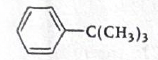
In \(\mathrm{C_6H_5-C(CH_3)_3}\), the carbon directly attached to the benzene ring is bonded to:
- the phenyl group, and
- three \(\mathrm{CH_3}\) groups.
So this carbon has no hydrogen.
Since there is no \(\alpha\)-hydrogen on the adjacent carbon, hyperconjugation is not possible.
-
Why the other options show hyperconjugation
- (b) \(\mathrm{C_6H_5-CH(CH_3)_2}\): the benzylic carbon has a hydrogen, so hyperconjugation is possible.
- (c) \(\mathrm{C_6H_5-CH_2-CH_3}\): the benzylic carbon has hydrogens, so hyperconjugation is possible.
- (d) \(\mathrm{CH_3-CH_2-CH_2^+}\): the adjacent carbon has \(\alpha\)-hydrogens, so the carbocation is stabilised by hyperconjugation.
-
Theory point to remember
Hyperconjugation is also called no-bond resonance. It involves overlap of a \(\sigma\)-bond, usually \(\mathrm{C-H}\), with an adjacent empty \(p\)-orbital or \(\pi\)-system.
-
Exam shortcut
First identify the carbon next to the multiple bond, aromatic ring, or positive charge. Then simply ask: Does that carbon have at least one hydrogen? If not, hyperconjugation is absent.
-
Final answer
\(\boxed{\text{(a) } \mathrm{C_6H_5-C(CH_3)_3}}\)
-
Chapter / topic / subtopic
Chapter: Organic Chemistry
Topic: Electronic effects in organic compounds
Subtopic: Hyperconjugation
-
Correct answer
\((b)\) ketone, carboxylic acid
Organic Chemistry – Some Basic Principles, Techniques and Hydrocarbons TTR -
Explanation
This is a standard oxidative cleavage question. Hot acidic \(\mathrm{KMnO_4}\) breaks the double bond and oxidises the two alkene carbons according to how many hydrogens are attached to them. In reaction I, \((\mathrm{CH_3})_2\mathrm{C{=}CH_2}\) gives acetone from the substituted carbon and \(\mathrm{CO_2}\) from the terminal \(\mathrm{CH_2}\) carbon. So \(X\) is a ketone. In reaction II, \(\mathrm{CH_3{-}CH{=}CH{-}CH_3}\) gives \(2\mathrm{CH_3COOH}\), so \(Y\) is a carboxylic acid.
-
Step-by-step explanation
Let us analyse the first alkene carefully.
I. \((\mathrm{CH_3})_2\mathrm{C{=}CH_2}\)
On oxidative cleavage with hot acidic \(\mathrm{KMnO_4}\), the double bond is broken.
The left double-bond carbon is attached to two \(\mathrm{CH_3}\) groups and no hydrogen. A double-bond carbon with no hydrogen generally gives a ketone on cleavage.
Therefore, that side forms:
\(\mathrm{CH_3COCH_3}\)
This is acetone, which contains the ketone functional group.
The terminal carbon is \(\mathrm{CH_2}\). A terminal alkene carbon under strong oxidation gets fully oxidised to \(\mathrm{CO_2}\) and \(\mathrm{H_2O}\).
So reaction I is:
\((\mathrm{CH_3})_2\mathrm{C{=}CH_2} \xrightarrow{\mathrm{KMnO_4/H^+}} \mathrm{CH_3COCH_3} + \mathrm{CO_2} + \mathrm{H_2O}\)
Hence, \(X\) contains a ketone group.
Now look at reaction II.
II. \(\mathrm{CH_3{-}CH{=}CH{-}CH_3}\)
This is but-2-ene. Both double-bond carbons have one hydrogen each. In strong oxidative cleavage, such carbons are oxidised further to carboxylic acids.
So each side gives acetic acid:
\(\mathrm{CH_3{-}CH{=}CH{-}CH_3} \xrightarrow{\mathrm{KMnO_4/H^+}} 2\mathrm{CH_3COOH}\)
Thus, \(Y\) contains the carboxylic acid functional group.
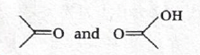
-
Concept used / theory behind it
This question is based on oxidative cleavage of alkenes. The product formed depends on the number of hydrogens attached to each carbon of the double bond.
- If the double-bond carbon has no hydrogen, it usually gives a ketone.
- If the double-bond carbon has one hydrogen, it can give a carboxylic acid under strong oxidation.
- If the carbon is terminal \(\mathrm{CH_2}\), it is often oxidised completely to \(\mathrm{CO_2}\).
This is why the first reaction gives ketone \(+\ \mathrm{CO_2}\), while the second gives carboxylic acid.
-
Why the correct option is right
Option \((b)\) says \(X\) is a ketone and \(Y\) is a carboxylic acid. That matches the actual products \(\mathrm{CH_3COCH_3}\) and \(\mathrm{CH_3COOH}\).
-
Why other options are wrong
- \((a)\) is wrong because \(Y\) is not an aldehyde. Under hot acidic \(\mathrm{KMnO_4}\), the aldehyde stage does not remain; it gets oxidised further to acid.
- \((c)\) is wrong because \(X\) is not an aldehyde. The carbon giving \(X\) has no hydrogen, so it forms a ketone.
- \((d)\) is wrong because neither product is an ester here. Oxidative cleavage of these alkenes does not produce ester in this case.
-
Exam tip / shortcut / elimination clue
In such questions, do not try to memorise the whole reaction at once. Break the \(\mathrm{C{=}C}\) bond mentally and inspect each alkene carbon separately. Ask only one thing: how many hydrogens are attached to that carbon? That usually tells you whether the product will be ketone, acid, or \(\mathrm{CO_2}\).
-
Final result
\(X\) is ketone and \(Y\) is carboxylic acid. Therefore, the correct answer is \((b)\).
-
Chapter / topic / subtopic
Chapter: Hydrocarbons
Topic: Alkenes
Subtopic: Oxidation and oxidative cleavage of alkenes
-
Correct answer
\((b)\) \(\mathrm{CH_3{-}CH_2{-}CH_2Br}\)
Organic Chemistry – Some Basic Principles, Techniques and Hydrocarbons TTR -
Explanation
The first step converts propyne into propene. In the second step, \(\mathrm{HBr}\) is added in the presence of peroxide, so the reaction follows the anti-Markovnikov radical mechanism. Therefore bromine goes to the terminal carbon, and the final product \(B\) is \(1\)-bromopropane.
-
Step-by-step explanation
The starting compound is propyne:
\(\mathrm{CH_3{-}C{\equiv}CH}\)
It is treated with \(\mathrm{H_2/Pd/C}\). This hydrogenates the triple bond to give the corresponding alkene:
\(\mathrm{CH_3{-}C{\equiv}CH} \xrightarrow{\mathrm{H_2/Pd/C}} \mathrm{CH_3{-}CH{=}CH_2}\)
So, \(A\) is propene.
Now propene is treated with \(\mathrm{HBr}\) in the presence of peroxide \((\mathrm{C_6H_5CO})_2\mathrm{O_2}\).
This is the famous peroxide effect or Kharasch effect. In presence of peroxide, \(\mathrm{HBr}\) adds through a free-radical mechanism and gives anti-Markovnikov addition.
That means bromine attaches to the less substituted carbon of the double bond.
So:
\(\mathrm{CH_3{-}CH{=}CH_2} \xrightarrow[\mathrm{peroxide}]{\mathrm{HBr}} \mathrm{CH_3{-}CH_2{-}CH_2Br}\)
Thus, \(B\) is \(1\)-bromopropane.
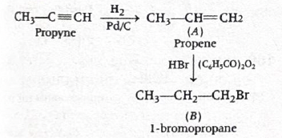
-
Concept used / theory behind it
This question combines two standard ideas:
- Hydrogenation of alkyne to alkene
- Peroxide effect in addition of \(\mathrm{HBr}\)
Normally, addition of \(\mathrm{HBr}\) to an alkene follows Markovnikov’s rule. But in the presence of peroxide, the mechanism changes to a radical pathway and the regioselectivity reverses. Then bromine adds to the less substituted carbon.
Also remember that the peroxide effect is observed only with \(\mathrm{HBr}\), not with \(\mathrm{HCl}\) or \(\mathrm{HI}\).
-
Why the correct option is right
Option \((b)\) represents \(1\)-bromopropane, which is exactly the anti-Markovnikov product formed when propene reacts with \(\mathrm{HBr}\) in the presence of peroxide.
-
Why other options are wrong
- \((a)\) is \(2\)-bromopropane, the Markovnikov product. That would be formed if peroxide were absent.
- \((c)\) is a dibromo compound and is not obtained by this reaction sequence.
- \((d)\) is also a dibrominated product and does not match simple addition of one molecule of \(\mathrm{HBr}\) to propene.
-
Exam tip / shortcut / elimination clue
The moment you see \(\mathrm{HBr}\) with peroxide, your mind should immediately go to anti-Markovnikov addition. Then look for the option where bromine goes to the terminal carbon of the alkene.
-
Final result
The major product \(B\) is \(1\)-bromopropane, \(\mathrm{CH_3{-}CH_2{-}CH_2Br}\). Hence, the correct answer is \((b)\).
-
Chapter / topic / subtopic
Chapter: Hydrocarbons
Topic: Alkenes and alkynes
Subtopic: Hydrogenation of alkynes and peroxide effect in \(\mathrm{HBr}\) addition
-
Correct answer
\((c)\) \(\dfrac{423}{x^3}\)
Solid State TTR -
Explanation
This is a direct unit-cell density formula question. Since copper has fcc structure, \(Z = 4\). Using \(d = \dfrac{ZM}{a^3N_A}\) and converting \(x\ \mathrm{\AA}\) into \(\mathrm{cm}\), we get \(d \approx \dfrac{423}{x^3}\ \mathrm{g\ cm^{-3}}\).
-
Step-by-step explanation
Given:
- Atomic mass of Cu, \(M = 63.5\)
- fcc structure, so \(Z = 4\)
- Edge length \(a = x\ \mathrm{\AA}\)
- \(N_A = 6.0 \times 10^{23}\ \mathrm{mol^{-1}}\)
We use the standard formula for density of a unit cell:
\(d = \dfrac{Z \times M}{a^3 \times N_A}\)
Now convert the edge length into \(\mathrm{cm}\):
\(1\ \mathrm{\AA} = 10^{-8}\ \mathrm{cm}\)
So,
\(a = x \times 10^{-8}\ \mathrm{cm}\)
Therefore,
\(a^3 = x^3 \times 10^{-24}\ \mathrm{cm^3}\)
Substitute into the density formula:
\(d = \dfrac{4 \times 63.5}{x^3 \times 10^{-24} \times 6.0 \times 10^{23}}\)
\(d = \dfrac{254}{6x^3 \times 10^{-1}}\)
\(d = \dfrac{2540}{6x^3}\)
\(d \approx \dfrac{423}{x^3}\ \mathrm{g\ cm^{-3}}\)
Hence the required answer is option \((c)\).
-
Concept used / theory behind it
The density of a crystalline solid is found by:
\(d = \dfrac{\text{mass of unit cell}}{\text{volume of unit cell}} = \dfrac{Z \times M}{a^3 \times N_A}\)
Here:
- \(Z\) = number of atoms per unit cell
- \(M\) = molar mass
- \(a^3\) = unit cell volume
- \(N_A\) = Avogadro number
For common cubic lattices:
- simple cubic: \(Z=1\)
- bcc: \(Z=2\)
- fcc: \(Z=4\)
-
Why the correct option is right
Option \((c)\) is the only one that has the correct dependence on \(x^3\), because density depends on volume, and unit-cell volume is proportional to \(a^3\). It also matches the correct numerical coefficient obtained after substitution.
-
Why other options are wrong
- \((a)\) is wrong because density cannot vary as \(\dfrac{1}{x}\); volume depends on \(x^3\).
- \((b)\) has the correct power of \(x\), but the numerical coefficient is far too small.
- \((d)\) also has the correct power of \(x\), but its coefficient is half of the correct value.
-
Exam tip / shortcut / elimination clue
Even before calculating, you can eliminate option \((a)\) because density must be inversely proportional to volume, hence to \(x^3\), not \(x\). Then only verify the coefficient.
-
Final result
The density of copper is \(\dfrac{423}{x^3}\ \mathrm{g\ cm^{-3}}\). Therefore, the correct answer is \((c)\).
-
Chapter / topic / subtopic
Chapter: Solid State
Topic: Crystal lattice and unit cell
Subtopic: Density of unit cell
-
Correct answer
\((a)\;140\ \mathrm{torr}\)
Solutions TTR -
Explanation
Since the solution is ideal, Raoult’s law is applicable to both components. Using \(x_B = 0.2\), we first get \(x_A = 0.8\). Then \(p_A = p_A^\circ x_A = 70 \times 0.8 = 56\ \mathrm{torr}\). From Dalton’s law, \(p_{\text{total}} = p_A + p_B\), so \(84 = 56 + p_B\), giving \(p_B = 28\ \mathrm{torr}\). Finally, \(p_B = p_B^\circ x_B\), so \(28 = p_B^\circ \times 0.2\), which gives \(p_B^\circ = 140\ \mathrm{torr}\).
-
Step-by-step explanation
Given:
\(p_A^\circ = 70\ \mathrm{torr}\)
\(x_B = 0.2\)
\(p_{\text{total}} = 84\ \mathrm{torr}\)
We have to find \(p_B^\circ\).
We know that:
\(x_A + x_B = 1\)
\(\Rightarrow x_A = 1 - 0.2 = 0.8\)
Also, from Dalton’s law of partial pressures:
\(p_{\text{total}} = p_A + p_B \qquad \cdots (i)\)
Now, using Raoult’s law for component \(A\):
\(p_A = p_A^\circ x_A\)
\(p_A = 70 \times 0.8 = 56\ \mathrm{torr} \qquad \cdots (ii)\)
For component \(B\):
\(p_B = p_B^\circ x_B\)
\(p_B = p_B^\circ \times 0.2 \qquad \cdots (iii)\)
Substitute Eqs. \((ii)\) and \((iii)\) into Eq. \((i)\):
\(84 = 56 + 0.2\,p_B^\circ\)
\(84 - 56 = 0.2\,p_B^\circ\)
\(28 = 0.2\,p_B^\circ\)
\(\Rightarrow p_B^\circ = \dfrac{28}{0.2} = 140\ \mathrm{torr}\)
-
Concept used / theory behind it
This question is a direct application of Raoult’s law for an ideal binary solution.
For component \(A\):
\(p_A = p_A^\circ x_A\)
For component \(B\):
\(p_B = p_B^\circ x_B\)
And the total vapour pressure is:
\(p_{\text{total}} = p_A + p_B\)
So, in ideal-solution problems, once mole fractions and one pure-component vapour pressure are given, the unknown pure vapour pressure of the other component can be obtained by combining Raoult’s law with Dalton’s law of partial pressures.
-
Why the correct option is right
Option \((a)\) gives \(140\ \mathrm{torr}\), which exactly satisfies:
\(84 = 70(0.8) + 140(0.2)\)
\(84 = 56 + 28 = 84\)
So this option is fully consistent with the given data.
-
Why other options are wrong
- \((b)\;90\): gives \(p_B = 90 \times 0.2 = 18\ \mathrm{torr}\), so total pressure becomes \(56 + 18 = 74\ \mathrm{torr}\), not \(84\ \mathrm{torr}\).
- \((c)\;120\): gives \(p_B = 120 \times 0.2 = 24\ \mathrm{torr}\), so total pressure becomes \(56 + 24 = 80\ \mathrm{torr}\), not \(84\ \mathrm{torr}\).
- \((d)\;80\): gives \(p_B = 80 \times 0.2 = 16\ \mathrm{torr}\), so total pressure becomes \(56 + 16 = 72\ \mathrm{torr}\), not \(84\ \mathrm{torr}\).
-
Exam tip / shortcut / elimination clue
In ideal-solution numericals, use this fixed order:
\(\text{missing mole fraction} \rightarrow \text{known partial pressure} \rightarrow \text{unknown partial pressure} \rightarrow \text{unknown pure vapour pressure}\)
This avoids confusion and makes the calculation very fast in the exam.
-
Final result
The vapour pressure of pure liquid \(B\) is \(140\ \mathrm{torr}\). Hence, the correct answer is \((a)\).
-
Chapter / topic / subtopic
Chapter: Solutions
Topic: Ideal solutions and vapour pressure
Subtopic: Raoult’s law
-
Correct answer
\((a)\;2.5 \times 10^{-3}\)
Electrochemistry and Chemical Kinetics TTR -
Explanation
For the chlorine electrode, the reduction half-reaction is \( \mathrm{Cl_2(g) + 2e^- \rightarrow 2Cl^-(aq)} \). From the Nernst equation, the electrode potential decreases as the concentration of \(\mathrm{Cl^-}\) increases. Therefore, the electrode potential will be maximum when the chloride ion concentration is minimum among the given options. Hence, \(X = 2.5 \times 10^{-3}\ \mathrm{mol\ L^{-1}}\).
-
Step-by-step explanation
The chlorine electrode is represented by the reduction half-cell:
\(\mathrm{Cl_2(g) + 2e^- \rightarrow 2Cl^-(aq)}\)
For this half-cell, the Nernst equation is:
\(E = E^\circ - \dfrac{0.0591}{2}\log \dfrac{[\mathrm{Cl^-}]^2}{P_{\mathrm{Cl_2}}}\)
If the pressure of chlorine gas is taken as constant, then the variable part is only \([\mathrm{Cl^-}]\).
So the equation can be viewed as:
\(E = E^\circ - 0.0591\log [\mathrm{Cl^-}] + \text{constant term}\)
This shows an important trend:
As \([\mathrm{Cl^-}]\) increases, \(\log [\mathrm{Cl^-}]\) increases, so the subtraction term becomes larger, and \(E\) decreases.
Therefore, to get the maximum electrode potential, \([\mathrm{Cl^-}]\) must be the minimum.
Now compare the given values:
- \((a)\;2.5 \times 10^{-3}\)
- \((b)\;7.5 \times 10^{-3}\)
- \((c)\;7.5 \times 10^{-2}\)
- \((d)\;2.5 \times 10^{-2}\)
The smallest concentration is:
\(2.5 \times 10^{-3}\ \mathrm{mol\ L^{-1}}\)
Hence, the electrode potential is maximum for option \((a)\).

-
Concept used / theory behind it
This question is based on the Nernst equation and the effect of concentration on electrode potential.
For a general reduction half-cell:
\(\mathrm{Ox + ne^- \rightarrow Red}\)
the Nernst equation is:
\(E = E^\circ - \dfrac{0.0591}{n}\log Q\)
For the chlorine electrode:
\(\mathrm{Cl_2 + 2e^- \rightarrow 2Cl^-}\)
so:
\(Q = \dfrac{[\mathrm{Cl^-}]^2}{P_{\mathrm{Cl_2}}}\)
If \([\mathrm{Cl^-}]\) increases, \(Q\) increases, so \(E\) decreases.
Thus, lower chloride ion concentration means higher reduction potential.
-
Why the correct option is right
Option \((a)\) has the lowest chloride ion concentration. Since lower \([\mathrm{Cl^-}]\) gives higher electrode potential for the chlorine reduction electrode, option \((a)\) is correct.
-
Why other options are wrong
- \((b)\), \((c)\), and \((d)\) all have higher chloride ion concentrations than option \((a)\).
- Higher \([\mathrm{Cl^-}]\) lowers the reduction potential of the chlorine electrode.
- Therefore, none of those options can give the maximum electrode potential.
-
Exam tip / shortcut / elimination clue
For non-metal reduction electrodes like halogen electrodes, if the product ion concentration increases, reduction potential usually decreases. So for maximum potential, choose the smallest concentration of the anion produced.
-
Final result
The value of \(X\) is \(2.5 \times 10^{-3}\ \mathrm{mol\ L^{-1}}\). Hence, the correct answer is \((a)\).
-
Chapter / topic / subtopic
Chapter: Electrochemistry
Topic: Electrode potential and Nernst equation
Subtopic: Effect of ion concentration on electrode potential
-
Correct answer
\((c)\;33\)
Electrochemistry and Chemical Kinetics TTR -
Explanation
This is a first-order kinetics question. For \(90\%\) completion, \(10\%\) of the reactant remains. Using the first-order rate equation \(t = \dfrac{2.303}{k}\log \dfrac{a}{a-x}\), we substitute \(k = 6.93 \times 10^{-2}\ \mathrm{min^{-1}}\) and \(\dfrac{a}{a-x} = \dfrac{100}{10} = 10\). Since \(\log 10 = 1\), we get \(t = \dfrac{2.303}{6.93 \times 10^{-2}} \approx 33.23\ \mathrm{min}\), so the nearest integer is \(33\).
-
Step-by-step explanation
Given:
Order of reaction \(= 1\)
\(k = 6.93 \times 10^{-2}\ \mathrm{min^{-1}}\)
We need the time for \(90\%\) completion of the reaction.
If the initial amount is taken as \(100\), then after \(90\%\) completion, the amount left is \(10\).
So:
\(a = 100\)
\(a - x = 10\)
For a first-order reaction:
\(t = \dfrac{2.303}{k}\log \dfrac{a}{a-x}\)
Substitute the values:
\(t = \dfrac{2.303}{6.93 \times 10^{-2}}\log \dfrac{100}{10}\)
\(t = \dfrac{2.303}{6.93 \times 10^{-2}}\log 10\)
\(\log 10 = 1\)
Therefore:
\(t = \dfrac{2.303}{6.93 \times 10^{-2}}\)
\(t = \dfrac{2.303}{0.0693} \approx 33.23\ \mathrm{min}\)
Nearest integer:
\(t \approx 33\ \mathrm{min}\)
-
Concept used / theory behind it
This question uses the integrated rate law for a first-order reaction.
The standard equation is:
\(k = \dfrac{2.303}{t}\log \dfrac{a}{a-x}\)
or equivalently,
\(t = \dfrac{2.303}{k}\log \dfrac{a}{a-x}\)
For percentage completion questions:
- \(50\%\) completion \(\Rightarrow a-x = 0.5a\)
- \(75\%\) completion \(\Rightarrow a-x = 0.25a\)
- \(90\%\) completion \(\Rightarrow a-x = 0.1a\)
So for \(90\%\) completion:
\(\dfrac{a}{a-x} = \dfrac{a}{0.1a} = 10\)
That is why these problems become very quick once the completion fraction is converted into amount remaining.
-
Why the correct option is right
Option \((c)\) gives \(33\), which matches the calculated value \(33.23\ \mathrm{min}\) to the nearest integer.
-
Why other options are wrong
- \((a)\;15\) and \((b)\;30\) are too small compared with the calculated time.
- \((d)\;43\) is larger than the actual value obtained from the first-order formula.
- Only option \((c)\) agrees with the required nearest-integer answer.
-
Exam tip / shortcut / elimination clue
For first-order \(90\%\) completion, directly remember:
\(t = \dfrac{2.303}{k}\)
because \(\log 10 = 1\). This saves time immediately.
-
Final result
The time required is \(33\ \mathrm{min}\). Hence, the correct answer is \((c)\).
-
Chapter / topic / subtopic
Chapter: Chemical Kinetics
Topic: First-order reactions
Subtopic: Integrated rate equation and percentage completion
-
Correct answer
\((b)\;\text{I, II and V only}\)
Surface Chemistry TTR -
Explanation
Physical adsorption is favoured by high surface area, low temperature, and high pressure. Therefore among the given factors, I, II, and V are correct, so the answer is option \((b)\).
-
Step-by-step explanation
Physical adsorption or physisorption is caused mainly by weak van der Waals forces.
Now examine each factor one by one:
(I) High surface area
This favours adsorption because a larger surface provides more sites for adsorbate particles to attach.
So, (I) is correct.
(II) Low temperatures
Adsorption is generally an exothermic process. According to Le Chatelier’s principle, lowering the temperature favours adsorption.
So, (II) is correct.
(III) High temperatures
Since adsorption is exothermic, increasing temperature opposes adsorption.
So, (III) is not correct.
(IV) Low pressures
For gases, lowering pressure decreases the tendency of gas molecules to remain on the surface.
So, (IV) is not correct.
(V) High pressures
Higher pressure pushes more gas molecules toward the adsorbent surface and increases adsorption.
So, (V) is correct.
Therefore, the correct set is:
I, II and V only
-
Concept used / theory behind it
This question is from adsorption in surface chemistry.
Physical adsorption has the following general characteristics:
- It arises due to weak van der Waals forces.
- It is generally reversible.
- It is favoured at low temperature.
- It is favoured at high pressure, especially for gases.
- It increases with increase in surface area of the adsorbent.
These are standard exam points and are often asked in statement-matching or factor-selection questions.
-
Why the correct option is right
Option \((b)\) includes exactly the three factors that favour physisorption: high surface area, low temperature, and high pressure.
-
Why other options are wrong
- \((a)\) includes high temperature and low pressure, both of which oppose physical adsorption.
- \((c)\) includes high temperature, which is wrong.
- \((d)\) includes low pressure, which is wrong for adsorption of gases.
-
Exam tip / shortcut / elimination clue
For physical adsorption, remember the three-word clue:
Cold, compressed, large surface
That means low temperature, high pressure, and high surface area.
-
Final result
The factors favouring physical adsorption are I, II and V only. Hence, the correct answer is \((b)\).
-
Chapter / topic / subtopic
Chapter: Surface Chemistry
Topic: Adsorption
Subtopic: Factors affecting physical adsorption
-
Correct answer
\((a)\;30,\ 26,\ 29\)
General Principles of Metallurgy TTR -
Explanation
Sphalerite is \(\mathrm{ZnS}\), so it is an ore of zinc \((Z=30)\). Siderite is \(\mathrm{FeCO_3}\), so it is an ore of iron \((Z=26)\). Malachite is \(\mathrm{Cu_2CO_3(OH)_2}\), so it is an ore of copper \((Z=29)\). Therefore, the atomic numbers are \(30, 26, 29\), corresponding to option \((a)\).
-
Step-by-step explanation
This is a direct ore-identification question. We identify each ore and then write the atomic number of the corresponding metal.
Sphalerite
Sphalerite is:
\(\mathrm{ZnS}\)
So it is an ore of zinc.
Atomic number of zinc \(= 30\)
Siderite
Siderite is:
\(\mathrm{FeCO_3}\)
So it is an ore of iron.
Atomic number of iron \(= 26\)
Malachite
Malachite is:
\(\mathrm{Cu_2CO_3(OH)_2}\)
So it is an ore of copper.
Atomic number of copper \(= 29\)
Hence, the required sequence is:
\(30,\ 26,\ 29\)
-
Concept used / theory behind it
This question checks memory of important ores from metallurgy.
Some common ores often asked in exams are:
- Sphalerite \(\rightarrow \mathrm{ZnS}\) \(\rightarrow\) zinc
- Galena \(\rightarrow \mathrm{PbS}\) \(\rightarrow\) lead
- Cinnabar \(\rightarrow \mathrm{HgS}\) \(\rightarrow\) mercury
- Siderite \(\rightarrow \mathrm{FeCO_3}\) \(\rightarrow\) iron
- Haematite \(\rightarrow \mathrm{Fe_2O_3}\) \(\rightarrow\) iron
- Malachite \(\rightarrow \mathrm{Cu_2CO_3(OH)_2}\) \(\rightarrow\) copper
- Cuprite \(\rightarrow \mathrm{Cu_2O}\) \(\rightarrow\) copper
Such questions are usually memory-based but still reward clear association between ore name, formula, metal, and atomic number.
-
Why the correct option is right
Option \((a)\) correctly maps sphalerite to zinc \((30)\), siderite to iron \((26)\), and malachite to copper \((29)\).
-
Why other options are wrong
- \((b)\) incorrectly assigns sphalerite to iron and siderite to zinc.
- \((c)\) incorrectly assigns siderite to copper and malachite to iron.
- \((d)\) incorrectly assigns sphalerite to copper and siderite to zinc.
-
Exam tip / shortcut / elimination clue
In metallurgy, many ore questions can be solved instantly if you remember just the formula clues:
- \(\mathrm{ZnS}\) means zinc ore
- \(\mathrm{FeCO_3}\) means iron ore
- \(\mathrm{Cu_2CO_3(OH)_2}\) means copper ore
Once the metal is identified, the atomic number part becomes immediate.
-
Final result
The atomic numbers are \(30, 26, 29\). Hence, the correct answer is \((a)\).
-
Chapter / topic / subtopic
Chapter: General Principles and Processes of Isolation of Elements
Topic: Ores and minerals
Subtopic: Identification of important ores and corresponding metals
- Correct answer: (d)
- Explanation: In the given reaction, \(Q\) is \( \mathrm{PH_3} \) (phosphine). Among the options, reactions (a), (b), and (c) can produce \( \mathrm{PH_3} \), but reaction (d) gives \( \mathrm{H_3PO_3} \), not phosphine.
-
Step-by-step explanation:
- First complete the given reaction: \( \mathrm{P_4 + 3NaOH + 3H_2O \rightarrow PH_3 + 3NaH_2PO_2} \)
- So, \(Q = \mathrm{PH_3}\).
-
Check each option:
-
(a) \( \mathrm{Ca_3P_2 + 6H_2O \rightarrow
3Ca(OH)_2 + 2PH_3} \)
Metal phosphides on hydrolysis give phosphine. So this produces \( \mathrm{PH_3} \). -
(b) \( \mathrm{4H_3PO_3
\xrightarrow{\Delta} PH_3 + 3H_3PO_4} \)
On heating, phosphorous acid undergoes disproportionation and gives phosphine. So this also produces \( \mathrm{PH_3} \). -
(c) \( \mathrm{PH_4I + KOH \rightarrow PH_3
+ KI + H_2O} \)
Phosphonium salts with alkali liberate phosphine. So this also produces \( \mathrm{PH_3} \). -
(d) \( \mathrm{PCl_3 + 3H_2O \rightarrow
H_3PO_3 + 3HCl} \)
Hydrolysis of phosphorus trichloride gives phosphorous acid, not phosphine.
-
(a) \( \mathrm{Ca_3P_2 + 6H_2O \rightarrow
3Ca(OH)_2 + 2PH_3} \)
-
Concept used / theory behind it:
- \( \mathrm{PH_3} \) is phosphine, an important hydride of phosphorus.
- It is commonly prepared by hydrolysis of metal phosphides, decomposition/disproportionation reactions of lower oxoacids of phosphorus, or liberation from phosphonium salts.
- But hydrolysis of covalent halides like \( \mathrm{PCl_3} \) usually gives oxyacids, not hydrides.
-
Why the correct option is right:
- Only option (d) fails to give \( \mathrm{PH_3} \), so it is the required answer.
-
Why other options are wrong:
- Options (a), (b), and (c) are all standard preparations of phosphine.
-
Exam tip / shortcut / elimination clue:
-
Remember this quick contrast:
- Metal phosphide + water \( \rightarrow \mathrm{PH_3} \)
- \( \mathrm{PCl_3 + H_2O \rightarrow H_3PO_3} \)
- If you identify \(Q\) as phosphine quickly, option (d) is eliminated immediately.
-
Remember this quick contrast:
- Final result: \(Q = \mathrm{PH_3}\), and the reaction in which \(Q\) is not obtained is (d).
- Chapter / topic / subtopic: P-Block Elements \(\rightarrow\) Group 15 Elements \(\rightarrow\) Phosphine and compounds of phosphorus
p-Block Elements (Groups 15 to 18) TTR
-
Correct answer: (c)
p-Block Elements (Groups 15 to 18) TTR -
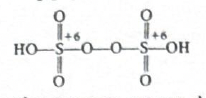
- Explanation: Peroxydisulphuric acid is \( \mathrm{H_2S_2O_8} \). In its structure, both sulphur atoms are in the \(+6\) oxidation state, and there are exactly two \( \mathrm{S{-}OH} \) bonds.
-
Step-by-step explanation:
- The formula of peroxydisulphuric acid is \( \mathrm{H_2S_2O_8} \).
- Its structure contains a peroxide linkage: \( \mathrm{HO{-}S(=O)_2{-}O{-}O{-}S(=O)_2{-}OH} \)
-
Each sulphur is bonded to:
- two \( \mathrm{S{=}O} \) bonds,
- one \( \mathrm{S{-}OH} \) bond,
- one \( \mathrm{S{-}O} \) bond connected to the peroxide bridge.
- So each sulphur has the same environment and hence the same oxidation state.
-
Concept used / theory behind it:
- In peroxo compounds, oxygen in the \( \mathrm{O{-}O} \) bond has oxidation state \( -1 \), not \( -2 \).
- Let oxidation state of each sulphur be \(x\).
- Then for \( \mathrm{H_2S_2O_8} \): \( \mathrm{2x + 2(+1) + 6(-2) + 2(-1) = 0} \)
- \( \mathrm{2x + 2 - 12 - 2 = 0} \)
- \( \mathrm{2x - 12 = 0} \Rightarrow x = +6 \)
- Also, from the structure, there are only two \(\mathrm{-OH}\) groups, so the number of \( \mathrm{S{-}OH} \) bonds is \(2\).
-
Why the correct option is right:
- Both sulphur atoms are \(+6\), and total \( \mathrm{S{-}OH} \) bonds are \(2\). Hence option (c) matches exactly.
-
Why other options are wrong:
- (a) and (d) wrongly assign \(+5\) to sulphur.
- (b) gives correct oxidation states but wrongly counts \(4\) \( \mathrm{S{-}OH} \) bonds.
-
Exam tip / shortcut / elimination clue:
- For peroxo acids, first identify the \( \mathrm{O{-}O} \) bond. Those two oxygens must be taken as \( -1 \).
- Then count actual \(\mathrm{-OH}\) groups directly from the structure rather than from the formula name.
- Final result: Oxidation states \( = (+6, +6)\), number of \( \mathrm{S{-}OH} \) bonds \( = 2\). So the answer is (c).
- Chapter / topic / subtopic: P-Block Elements \(\rightarrow\) Group 16 Elements \(\rightarrow\) Oxyacids of sulphur and peroxo compounds
-
Correct answer: (b)
p-Block Elements (Groups 15 to 18) TTR - Explanation: Statements (II) and (III) are correct, while (I) and (IV) are incorrect.
-
Step-by-step explanation:
-
(I) “Au is soluble in aqua regia but not
Pt.”
This is incorrect because both gold and platinum dissolve in aqua regia. -
(II) “Among the oxoacids of chlorine
highest oxidation state possible for chlorine is \(+7\).”
This is correct. In \( \mathrm{HClO_4} \) (perchloric acid), chlorine is in the \(+7\) oxidation state. -
(III) “Among the hydrogen halides lowest
boiling point is for HCl.”
This is correct. HF has unusually high boiling point due to hydrogen bonding, while among HCl, HBr, and HI, boiling point increases with molecular mass. So HCl has the lowest boiling point overall. -
(IV) “The order of stability of oxides of
halogens is \( \mathrm{Cl > Br > I} \).”
This is incorrect. The correct order is \( \mathrm{I > Cl > Br} \).
-
(I) “Au is soluble in aqua regia but not
Pt.”
-
Concept used / theory behind it:
- Aqua regia is a mixture of concentrated \( \mathrm{HCl} \) and concentrated \( \mathrm{HNO_3} \), usually in the ratio \(3:1\).
- It dissolves noble metals like Au and Pt by forming complex chloro-species.
-
For chlorine oxoacids:
- \( \mathrm{HClO} \): \(+1\)
- \( \mathrm{HClO_2} \): \(+3\)
- \( \mathrm{HClO_3} \): \(+5\)
- \( \mathrm{HClO_4} \): \(+7\)
- Hydrogen halides show an exception because HF forms strong intermolecular hydrogen bonding.
- Oxides of halogens become more stable down the group in the order reflected by iodine oxides being more stable than bromine oxides.
-
Why the correct option is right:
- Only statements (II) and (III) survive careful checking, so option (b) is correct.
-
Why other options are wrong:
- Any option containing statement (I) is wrong because platinum also dissolves in aqua regia.
- Any option containing statement (IV) is wrong because the stated stability order is not correct.
-
Exam tip / shortcut / elimination clue:
-
Remember two high-yield facts:
- Both Au and Pt dissolve in aqua regia.
- HF is the anomalous hydrogen halide because of hydrogen bonding.
- That alone often narrows the answer quickly.
-
Remember two high-yield facts:
- Final result: Correct statements are II and III only. Therefore, the answer is (b).
- Chapter / topic / subtopic: P-Block Elements \(\rightarrow\) Halogens \(\rightarrow\) Oxoacids, hydrogen halides, and general properties
-
Correct answer: (a)
p-Block Elements (Groups 15 to 18) TTR -
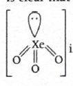
- Explanation: Under the given conditions, \(X\) is \( \mathrm{XeF_6} \). On hydrolysis, \( \mathrm{XeF_6} \) gives \(Y = \mathrm{XeOF_4}\) and \(Z = \mathrm{XeO_3}\). \( \mathrm{XeOF_4} \) is square pyramidal, and \( \mathrm{XeO_3} \) has \(3\sigma\), \(3\pi\) bonds with one lone pair on xenon.
-
Step-by-step explanation:
- Xenon reacts with fluorine in excess fluorine and suitable temperature-pressure conditions to form \( \mathrm{XeF_6} \).
- So, \( \mathrm{Xe + 3F_2 \rightarrow XeF_6} \)
- Hence \(X = \mathrm{XeF_6}\).
- On limited hydrolysis: \( \mathrm{XeF_6 + H_2O \rightarrow XeOF_4 + 2HF} \)
- So \(Y = \mathrm{XeOF_4}\).
- On further hydrolysis: \( \mathrm{XeF_6 + 3H_2O \rightarrow XeO_3 + 6HF} \)
- So \(Z = \mathrm{XeO_3}\).
-
Concept used / theory behind it:
-
For \(Y = \mathrm{XeOF_4}\):
- Xenon has 6 electron pairs around it: 5 bond pairs and 1 lone pair.
- Electron pair geometry is octahedral.
- With one lone pair, the molecular shape becomes square pyramidal.
-
For \(Z = \mathrm{XeO_3}\):
- Xenon is bonded to three oxygens and has one lone pair.
- The electron pair arrangement is tetrahedral, but the molecular geometry is trigonal pyramidal.
- Each \( \mathrm{Xe{=}O} \) bond contributes one \(\sigma\) and one \(\pi\) bond.
- Therefore \( \mathrm{XeO_3} \) has \(3\sigma\) and \(3\pi\) bonds, with one lone pair on xenon.
-
For \(Y = \mathrm{XeOF_4}\):
-
Why the correct option is right:
- Statement (I) is correct because \( \mathrm{XeOF_4} \) is square pyramidal.
- Statement (III) is correct because \( \mathrm{XeO_3} \) has three double bonds and one lone pair on xenon.
- Thus option (a), I and III only, is correct.
-
Why other options are wrong:
- (II) is wrong because \(Y\) is not linear.
- (IV) is wrong because \(Z\) is not tetrahedral in molecular shape; it is trigonal pyramidal.
-
Exam tip / shortcut / elimination clue:
- Do not confuse electron pair geometry with molecular geometry.
- For \( \mathrm{XeO_3} \), the electron pair arrangement is tetrahedral, but because one position is occupied by a lone pair, the actual shape is trigonal pyramidal.
- This is a very common exam trap.
- Final result: Correct statements are I and III only. Therefore, the answer is (a).
- Chapter / topic / subtopic: P-Block Elements \(\rightarrow\) Noble Gases \(\rightarrow\) Compounds of xenon and their structures
-
Correct answer: (d) 21
d and f Block Elements & Coordination Compounds TTR - Explanation: \( \mathrm{Gd^{3+}} \) has \(7\) \(f\)-electrons and \( \mathrm{Yb^{2+}} \) has \(14\) \(f\)-electrons. Therefore, \(x + y = 7 + 14 = 21\).
-
Step-by-step explanation:
- First write the electronic configuration of gadolinium \((Z=64)\): \( \mathrm{Gd = (Xe)\,4f^7\,5d^1\,6s^2} \)
- To form \( \mathrm{Gd^{3+}} \), electrons are removed first from \(6s\), then from \(5d\).
- So, \( \mathrm{Gd^{3+} = (Xe)\,4f^7} \)
- Hence, \(x = 7\).
- Now write the electronic configuration of ytterbium \((Z=70)\): \( \mathrm{Yb = (Xe)\,4f^{14}\,6s^2} \)
- To form \( \mathrm{Yb^{2+}} \), the two \(6s\) electrons are removed.
- So, \( \mathrm{Yb^{2+} = (Xe)\,4f^{14}} \)
- Hence, \(y = 14\).
- Therefore, \( \mathrm{x + y = 7 + 14 = 21} \)
-
Concept used / theory behind it:
- Lanthanoids usually lose the outermost \(6s\) electrons first.
- If a \(5d\) electron is present, that is removed before disturbing the stable \(4f\) electrons.
- The \(4f\)-subshell becomes especially important because half-filled \((f^7)\) and fully filled \((f^{14})\) arrangements are relatively stable.
-
Why the correct option is right:
- \( \mathrm{Gd^{3+}} \) gives \(4f^7\), so \(x=7\).
- \( \mathrm{Yb^{2+}} \) gives \(4f^{14}\), so \(y=14\).
- Thus the required sum is \(21\).
-
Why other options are wrong:
- 13, 20, and 18 arise only if ion formation is handled incorrectly or if electrons are removed from the \(4f\)-subshell prematurely.
- In lanthanoids, always remove outer electrons first before touching \(4f\).
-
Exam tip / shortcut / elimination clue:
-
Memorize these two very useful results:
- \( \mathrm{Gd^{3+} = 4f^7} \)
- \( \mathrm{Yb^{2+} = 4f^{14}} \)
- These come repeatedly in coordination chemistry and \(f\)-block questions.
-
Memorize these two very useful results:
- Final result: \( \mathrm{x+y=21} \).
- Chapter / topic / subtopic: \(f\)-Block Elements \(\rightarrow\) Lanthanoids \(\rightarrow\) Electronic configurations and oxidation states
-
Correct answer: (a) A-II, B-III, C-IV, D-I
d and f Block Elements & Coordination Compounds TTR - Explanation: We first determine the oxidation state and \(d\)-electron count of the central metal ion in each complex, and then use ligand strength to decide whether the complex is high spin or low spin. That gives the correct crystal field electronic configuration for each case.
-
Step-by-step explanation:
-
For A. \(\mathrm{[Co(NH_3)_6]^{3+}}\)
- \(\mathrm{NH_3}\) is a neutral ligand, so cobalt is in \(+3\) oxidation state.
- \(\mathrm{Co} = 3d^7 4s^2\), so \(\mathrm{Co^{3+}} = 3d^6\).
- \(\mathrm{NH_3}\) is a sufficiently strong-field ligand for \(\mathrm{Co^{3+}}\), so pairing occurs.
- Thus configuration is low-spin \(d^6\): \( \mathrm{t_{2g}^{6}e_{g}^{0}} \)
- So, A-II.
-
For B. \(\mathrm{[CoF_6]^{3-}}\)
- Each \(\mathrm{F^-}\) is \(-1\), so cobalt is again in \(+3\) oxidation state.
- Thus central ion is \(\mathrm{Co^{3+}} = 3d^6\).
- \(\mathrm{F^-}\) is a weak-field ligand, so the complex is high spin.
- Therefore configuration is \( \mathrm{t_{2g}^{4}e_{g}^{2}} \)
- So, B-III.
-
For C. \(\mathrm{[Ni(CO)_4]}\)
- \(\mathrm{CO}\) is a neutral ligand, so nickel is in oxidation state \(0\).
- \(\mathrm{Ni} = 3d^8 4s^2\), but in coordination chemistry \(\mathrm{Ni(0)}\) in this complex is treated as \(d^{10}\).
- \(\mathrm{[Ni(CO)_4]}\) is tetrahedral.
- For tetrahedral notation given in the options, \(d^{10}\) corresponds to \( \mathrm{t^{4}_{2}e^{6}} \)
- So, C-IV.
-
For D. \(\mathrm{[Fe(CN)_6]^{3-}}\)
- Each \(\mathrm{CN^-}\) is \(-1\), so iron is in \(+3\) oxidation state.
- \(\mathrm{Fe^{3+}} = 3d^5\).
- \(\mathrm{CN^-}\) is a strong-field ligand, so the complex is low spin.
- Hence configuration is \( \mathrm{t_{2g}^{5}e_{g}^{0}} \)
- So, D-I.
- Therefore the full matching is A-II, B-III, C-IV, D-I.
-
For A. \(\mathrm{[Co(NH_3)_6]^{3+}}\)
-
Concept used / theory behind it:
- This is a crystal field theory question.
-
You must combine three ideas:
- oxidation state of metal,
- \(d\)-electron count,
- strong-field vs weak-field ligand.
- \(\mathrm{NH_3}\) and \(\mathrm{CN^-}\) are stronger ligands than \(\mathrm{F^-}\).
- Strong-field ligands increase \(\Delta_o\) and promote pairing, giving low-spin complexes.
- Weak-field ligands give high-spin complexes.
- \(\mathrm{[Ni(CO)_4]}\) is a classic tetrahedral \(18\)-electron complex of nickel.
-
Why the correct option is right:
- A matches II because \(\mathrm{[Co(NH_3)_6]^{3+}}\) is low-spin \(d^6\).
- B matches III because \(\mathrm{[CoF_6]^{3-}}\) is high-spin \(d^6\).
- C matches IV because tetrahedral \(\mathrm{Ni(0)}\) in \(\mathrm{[Ni(CO)_4]}\) is \(d^{10}\).
- D matches I because \(\mathrm{[Fe(CN)_6]^{3-}}\) is low-spin \(d^5\).
-
Why other options are wrong:
- Any option that assigns \(\mathrm{[CoF_6]^{3-}}\) as low spin is incorrect because \(\mathrm{F^-}\) is weak field.
- Any option that assigns \(\mathrm{[Fe(CN)_6]^{3-}}\) as high spin is incorrect because \(\mathrm{CN^-}\) is strong field.
- Misreading \(\mathrm{[Ni(CO)_4]}\) as octahedral also leads to wrong matching.
-
Exam tip / shortcut / elimination clue:
-
Always solve match-the-following coordination questions in
this order:
- oxidation state,
- \(d\)-count,
- geometry,
- ligand strength.
-
Two highly tested facts:
- \(\mathrm{[Fe(CN)_6]^{3-}}\) is low spin.
- \(\mathrm{[Ni(CO)_4]}\) is tetrahedral and diamagnetic.
-
Always solve match-the-following coordination questions in
this order:
- Final result: The correct matching is A-II, B-III, C-IV, D-I, so the answer is (a).
- Chapter / topic / subtopic: Coordination Compounds \(\rightarrow\) Crystal field theory \(\rightarrow\) Electronic configurations in complexes
-
Complex Electronic configuration of metal/ion A. \(\mathrm{[Co(NH_3)_6]^{3+}}\) II. \( \mathrm{t_{2g}^{6}e_{g}^{0}} \) B. \(\mathrm{[CoF_6]^{3-}}\) III. \( \mathrm{t_{2g}^{4}e_{g}^{2}} \) C. \(\mathrm{[Ni(CO)_4]}\) IV. \( \mathrm{t^{4}_{2}e^{6}} \) D. \(\mathrm{[Fe(CN)_6]^{3-}}\) I. \( \mathrm{t_{2g}^{5}e_{g}^{0}} \)
-
Correct answer: (a) 4
Polymers TTR - Explanation: The elastomers in the given list are natural rubber, vulcanized rubber, buna-N, and neoprene. Hence the total number is \(4\).
-
Step-by-step explanation:
- Let us check each polymer one by one.
- Natural rubber \(\rightarrow\) elastomer
- Polyethene \(\rightarrow\) thermoplastic, not elastomer
- Vulcanized rubber \(\rightarrow\) elastomer
- Bakelite \(\rightarrow\) thermosetting polymer, not elastomer
- Polyvinylchloride (PVC) \(\rightarrow\) thermoplastic, not elastomer
- Buna-N \(\rightarrow\) synthetic rubber, hence elastomer
- Nylon-6 \(\rightarrow\) fibre-forming polymer, not elastomer
- Neoprene \(\rightarrow\) synthetic rubber, hence elastomer
- So total elastomers \(= 4\).
-
Concept used / theory behind it:
- Elastomers are polymers that can be stretched and regain their original shape when the force is removed.
- They usually have weak intermolecular forces and some degree of cross-linking.
- Natural rubber and synthetic rubbers such as buna-N and neoprene are classic examples.
- Vulcanization introduces sulphur cross-links, improving elasticity and strength.
-
Why the correct option is right:
-
The four elastomeric substances in the list are:
- natural rubber
- vulcanized rubber
- buna-N
- neoprene
- Therefore the count is \(4\).
-
The four elastomeric substances in the list are:
-
Why other options are wrong:
- Polyethene and PVC are thermoplastics, not elastomers.
- Bakelite is thermosetting.
- Nylon-6 is a fibre-forming polymer.
- So counts like 3, 5, or 6 are not possible.
-
Exam tip / shortcut / elimination clue:
-
In polymer classification questions, first group the names
into:
- rubbers/elastomers,
- fibres,
- thermoplastics,
- thermosetting polymers.
- Anything commonly called “rubber” is usually an elastomer.
-
In polymer classification questions, first group the names
into:
- Final result: Number of elastomers \(= 4\).
- Chapter / topic / subtopic: Polymers \(\rightarrow\) Classification of polymers \(\rightarrow\) Elastomers
-
Correct answer: (c)
Biomolecules TTR - Explanation: Maltose is made of two glucose units, not glucose and galactose. So statement (c) is incorrect.
-
Step-by-step explanation:
- Maltose is a disaccharide formed by condensation of two glucose molecules.
- Specifically, it consists of two \(\alpha\)-D-glucose units.
- These are joined by an \(\alpha(1 \rightarrow 4)\)-glycosidic linkage.
- Since one anomeric carbon remains free, maltose behaves as a reducing sugar.
-
Concept used / theory behind it:
- Maltose is commonly called malt sugar.
- It is obtained on hydrolysis of starch.
- Because one hemiacetal carbon is free, it can open into the aldehydic form and reduce Tollens’ reagent or Fehling’s solution.
- The linkage in maltose is between C-1 of one glucose and C-4 of the second glucose.
-
Why the correct option is right:
- Option (c) describes a disaccharide containing glucose and galactose, which is not maltose.
- That statement is therefore the incorrect one asked in the question.
-
Why other options are wrong:
- (a) is true because maltose is a reducing sugar.
- (b) is true because maltose contains two glucose units.
- (d) is true because maltose has a \(1,4\)-glycosidic linkage.
-
Exam tip / shortcut / elimination clue:
-
Memorize these standard pairs:
- Maltose = glucose + glucose
- Lactose = glucose + galactose
- Sucrose = glucose + fructose
- This one comparison alone solves many biomolecules MCQs instantly.
-
Memorize these standard pairs:
- Final result: The incorrect statement is (c).
- Chapter / topic / subtopic: Biomolecules \(\rightarrow\) Carbohydrates \(\rightarrow\) Disaccharides and maltose
-
Correct answer: (b)
Chemistry in Everyday Life TTR - Explanation: Chloramphenicol is an antibiotic, not an antiseptic. So option (b) is the incorrectly matched pair.
-
Step-by-step explanation:
- Butylated hydroxy toluene (BHT) is used as an antioxidant in food to prevent oxidation of fats and oils. So option (a) is correctly matched.
- Chloramphenicol is a broad-spectrum antibiotic used to treat certain bacterial infections. It is not classified as an antiseptic. So option (b) is incorrect.
- Norethindrone is used in antifertility formulations, so option (c) is correctly matched.
- Alitame is an artificial sweetener, so option (d) is correctly matched.
-
Concept used / theory behind it:
- Antiseptics are applied to living tissues to kill or prevent growth of microorganisms.
- Disinfectants are used on non-living surfaces.
- Antibiotics are chemical substances, often produced by microorganisms or synthesized, that inhibit or kill other microorganisms inside the body.
- This question comes from the classification of drugs and food additives in Chemistry in Everyday Life.
-
Why the correct option is right:
- Option (b) is right because chloramphenicol belongs to the antibiotic category, not the antiseptic category.
-
Why other options are wrong or less suitable:
- (a) is correctly matched because BHT is a food antioxidant.
- (c) is correctly matched because norethindrone is an antifertility drug.
- (d) is correctly matched because alitame is an artificial sweetener.
-
Exam tip / shortcut / elimination clue:
-
Remember this quick distinction:
- Chloramphenicol \(\rightarrow\) antibiotic
- Dettol / tincture iodine \(\rightarrow\) antiseptic
- Food preservatives, sweeteners, antioxidants, and drug classes are often asked as direct memory-based MCQs.
-
Remember this quick distinction:
- Final result: The incorrectly matched pair is Chloramphenicol – antiseptic, so the answer is (b).
- Chapter / topic / subtopic: Chemistry in Everyday Life \(\rightarrow\) Drugs and food additives \(\rightarrow\) Antibiotics, antifertility drugs, antioxidants, artificial sweeteners
-
Correct answer: (d)
Haloalkanes and Haloarenes TTR - Explanation: \( \mathrm{S_N2} \) reactions require backside attack, so steric hindrance strongly reduces reactivity. A tertiary alkyl halide is least reactive towards \( \mathrm{S_N2} \). Therefore option (d) is the least reactive.
-
Step-by-step explanation:
- \( \mathrm{S_N2} \) reaction occurs in a single step through backside attack of the nucleophile on the carbon attached to the leaving group.
- This needs easy approach to that carbon atom.
- So the reactivity order for alkyl halides in \( \mathrm{S_N2} \) is: \( \mathrm{methyl > 1^\circ > 2^\circ \gg 3^\circ} \)
-
Now examine the options:
- (a) \(\mathrm{(CH_3)_3C{-}CH_2Br}\) is a neopentyl bromide type primary halide. It is primary, but highly hindered at the \(\beta\)-carbon, so it is slow.
- (b) \(\mathrm{CH_3{-}CH(Br){-}CH_3}\) is a secondary halide.
- (c) \(\mathrm{CH_3{-}CH_2{-}CH_2Br}\) is a normal primary halide and reacts comparatively faster.
- (d) \(\mathrm{(CH_3)_3CBr}\) is a tertiary halide and is the least reactive towards \( \mathrm{S_N2} \).
- Thus option (d) is correct.
-
Concept used / theory behind it:
- \( \mathrm{S_N2} \) stands for bimolecular nucleophilic substitution.
- Its rate depends on both substrate and nucleophile.
- The mechanism involves a transition state formed by simultaneous bond making and bond breaking.
- Because the nucleophile must attack from the opposite side of the leaving group, crowding around the reactive carbon drastically lowers the rate.
- Tertiary alkyl halides are practically unreactive in \( \mathrm{S_N2} \) because the attack is sterically blocked.
-
Why the correct option is right:
- Option (d) is a tertiary bromide, and tertiary halides are least reactive towards \( \mathrm{S_N2} \).
-
Why other options are wrong or less suitable:
- (c) is primary, so it is much more reactive than (d).
- (b) is secondary, so it is slower than primary but still more reactive than tertiary in \( \mathrm{S_N2} \).
- (a) is a tricky option because neopentyl halides are unusually slow in \( \mathrm{S_N2} \), but they are still not as unreactive as a true tertiary halide in the standard reactivity order asked here.
-
Exam tip / shortcut / elimination clue:
- In direct \( \mathrm{S_N2} \) comparison questions, first identify the degree of the carbon bearing the halogen.
- As a quick rule: \( \mathrm{3^\circ} \) alkyl halide \(\rightarrow\) least favorable for \( \mathrm{S_N2} \).
- If a tertiary halide is present among ordinary options, it is usually the answer.
- Final result: The least reactive compound towards \( \mathrm{S_N2} \) reaction is (d).
- Chapter / topic / subtopic: Haloalkanes and Haloarenes \(\rightarrow\) Nucleophilic substitution reactions \(\rightarrow\) \( \mathrm{S_N1} \) and \( \mathrm{S_N2} \) reactivity
-
Correct answer: (d) Isopropylbenzene
Organic Compounds Containing C, H and O TTR - Explanation: Phenol is mainly manufactured industrially from cumene, which is isopropylbenzene. On oxidation with air it forms cumene hydroperoxide, and on acid cleavage it gives phenol and acetone.
-
Step-by-step explanation:
- The industrial process referred to in the question is the cumene process.
- In this method, isopropylbenzene \((\mathrm{cumene})\) is first oxidized by air to form cumene hydroperoxide.
- Then, on treatment with dilute acid, cumene hydroperoxide rearranges and cleaves to give phenol and acetone.
-
The overall sequence is:
- \(\mathrm{C_6H_5CH(CH_3)_2 \xrightarrow{O_2} C_6H_5C(CH_3)_2OOH}\)
- \(\mathrm{C_6H_5C(CH_3)_2OOH \xrightarrow{H^+} C_6H_5OH + CH_3COCH_3}\)
-
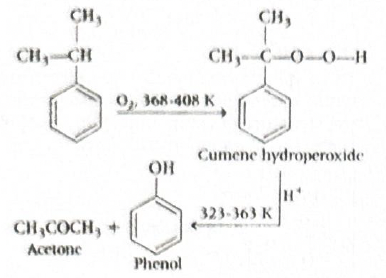
-
Concept used / theory behind it:
- Cumene is another name for isopropylbenzene.
- This is the major industrial route for manufacturing phenol because it also gives acetone as a useful by-product.
- The process involves oxidation followed by acid-catalyzed cleavage of the hydroperoxide intermediate.
- This is a very standard named industrial preparation from alcohols, phenols, and ethers in organic chemistry.
-
Why the correct option is right:
- Only isopropylbenzene fits the clue “oxidation in air followed by treatment with dilute acid” for large-scale phenol manufacture.
- Hence \(X =\) isopropylbenzene.
-
Why other options are wrong or less suitable:
- (a) Benzenediazonium salts can give phenols on hydrolysis, but that is not the industrial oxidation-air plus dilute-acid route mentioned here.
- (b) Benzaldehyde is not the precursor used in the main industrial process for phenol.
- (c) Toluene also does not undergo the stated sequence to give phenol in the standard industrial route.
-
Exam tip / shortcut / elimination clue:
-
Whenever a question says:
- phenol manufacture,
- oxidation in air,
- then dilute acid,
- immediately think cumene process.
- And cumene = isopropylbenzene.
-
Whenever a question says:
- Final result: The compound \(X\) is isopropylbenzene (cumene), so the answer is (d).
- Chapter / topic / subtopic: Alcohols, Phenols and Ethers \(\rightarrow\) Phenols \(\rightarrow\) Industrial preparation of phenol (cumene process)
-
-
Correct answer:
(b) \(\mathrm{CH_3CHO + OHC{-}CHO}\)
Organic Compounds Containing C, H and O TTR - Explanation: Ozonolysis of but-2-ene gives ethanal \((X)\). Two molecules of ethanal undergo aldol condensation followed by dehydration to form but-2-enal \((Z)\). On ozonolysis, but-2-enal gives ethanal \((A)\) and ethanedial \((B)\).
-
Step-by-step explanation:
- Start with reaction (I): \( \mathrm{CH_3{-}CH{=}CH{-}CH_3 \xrightarrow[(ii)\ Zn{-}H_2O]{(i)\ O_3} 2X} \)
- This is ozonolysis of but-2-ene.
- Breaking the double bond in symmetric but-2-ene gives two identical molecules of ethanal: \( \mathrm{X = CH_3CHO} \)
-
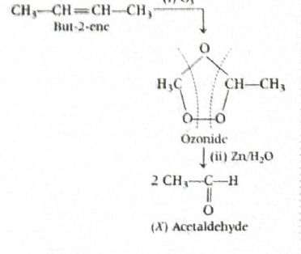
-
- Now reaction (II) starts with \(2X\), that is, two molecules of ethanal.
- In dilute NaOH, ethanal undergoes aldol addition to form 3-hydroxybutanal.
- On heating, 3-hydroxybutanal loses water to give the \(\alpha,\beta\)-unsaturated aldehyde but-2-enal \((Z)\).
- So, \( \mathrm{2CH_3CHO \xrightarrow[(ii)\ 2.\ \Delta]{(i)\ NaOH\ (dil.)} CH_3{-}CH{=}CH{-}CHO} \)
-
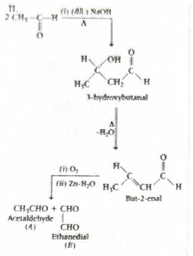
-
- Finally, ozonolysis of but-2-enal cleaves the \(\mathrm{C=C}\) bond.
- Structure of but-2-enal is: \( \mathrm{CH_3{-}CH{=}CH{-}CHO} \)
-
Cleavage at the double bond gives:
- from the left fragment: \( \mathrm{CH_3CHO} \)
- from the right fragment: \( \mathrm{OHC{-}CHO} \) (ethanedial / glyoxal)
- Hence, \( \mathrm{A = CH_3CHO} \) and \( \mathrm{B = OHC{-}CHO} \)
-
Concept used / theory behind it:
- Ozonolysis cleaves the carbon-carbon double bond and converts each alkene carbon into a carbonyl compound.
- When the starting alkene is symmetric, identical products are formed.
- Ethanal has \(\alpha\)-hydrogen atoms, so it undergoes aldol condensation in dilute base.
- The aldol product dehydrates on heating to give an \(\alpha,\beta\)-unsaturated aldehyde.
- That unsaturated aldehyde can again undergo ozonolysis to give smaller carbonyl compounds.
-
Why the correct option is right:
-
Correct tracking of all three steps gives:
- \( \mathrm{X = CH_3CHO} \)
- \( \mathrm{Z = CH_3{-}CH{=}CH{-}CHO} \)
- \( \mathrm{A = CH_3CHO} \)
- \( \mathrm{B = OHC{-}CHO} \)
- So option (b) matches exactly.
-
Correct tracking of all three steps gives:
-
Why other options are wrong or less suitable:
- (a) is wrong because formaldehyde is not formed here.
- (c) is wrong because propanal is not obtained from ozonolysis of but-2-ene or but-2-enal in this sequence.
- (d) is wrong because acetone is not the product of the first ozonolysis step.
-
Exam tip / shortcut / elimination clue:
- For multistep carbonyl questions, do not jump directly to the final options.
- First identify \(X\), then build \(Z\), then split \(Z\) again by ozonolysis.
- That stepwise tracking prevents common mistakes.
- Final result: \( \mathrm{A = CH_3CHO} \) and \( \mathrm{B = OHC{-}CHO} \), so the answer is (b).
- Chapter / topic / subtopic: Aldehydes, Ketones and Carboxylic Acids \(\rightarrow\) Aldol condensation and ozonolysis \(\rightarrow\) Reaction sequence analysis
-
Correct answer:
(b) \(\mathrm{CH_3CHO + OHC{-}CHO}\)
-
Correct answer: (a)
Organic Compounds Containing C, H and O TTR - Explanation: In reaction I, \(p\)-methoxytoluene with HI undergoes cleavage of the aryl-alkyl ether bond at the alkyl side to give \(p\)-cresol. In reaction II, the aryl ketone undergoes Wolff-Kishner reduction to convert the \( \mathrm{-COCH_3} \) group into \( \mathrm{-CH_2CH_3} \), giving \(p\)-ethylanisole.
-
Step-by-step explanation:
- Reaction I: The substrate is \(p\)-methoxytoluene, that is, an aryl methyl ether.
- With HI, the ether oxygen is first protonated.
- Then iodide ion attacks the methyl group by \( \mathrm{S_N2} \) cleavage because cleavage of the alkyl-oxygen bond is favored, not the aryl-oxygen bond.
- So the products are \(p\)-cresol and \( \mathrm{CH_3I} \).
- Hence, \(X = p\)-cresol.
- Reaction II: The substrate is \(p\)-methoxyacetophenone.
- \( \mathrm{NH_2NH_2 / KOH / glycol / \Delta} \) are Wolff-Kishner conditions.
- Wolff-Kishner reduction converts the carbonyl group \( \mathrm{C{=}O} \) into \( \mathrm{CH_2} \).
- Therefore, the side chain \( \mathrm{-COCH_3} \) becomes \( \mathrm{-CH_2CH_3} \).
- Hence, \(Y = p\)-ethylanisole.
-
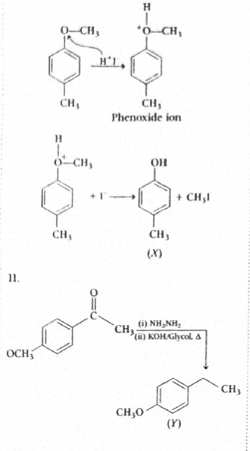
-
Concept used / theory behind it:
- Aryl-alkyl ethers on treatment with HI or HBr undergo cleavage at the alkyl-oxygen bond because the aryl-oxygen bond has partial double bond character due to resonance and does not undergo easy cleavage.
- Thus anisole-type compounds give phenol derivatives, not aryl halides, on cleavage with HI.
- Wolff-Kishner reduction is a carbonyl reduction method in strongly basic medium.
- It converts aldehydes and ketones into alkanes through hydrazone formation followed by loss of nitrogen.
-
Why the correct option is right:
- Only option (a) correctly identifies \(X\) as \(p\)-cresol and \(Y\) as \(p\)-ethylanisole.
-
Why other options are wrong or less suitable:
- Any option giving aryl iodide in reaction I is wrong because HI cleaves the ether at the methyl side, not the aromatic side.
- Any option giving alcohol in reaction II is wrong because Wolff-Kishner reduction gives hydrocarbon, not alcohol.
- Any option retaining the carbonyl group in reaction II is also incorrect because the reagent specifically reduces \( \mathrm{C{=}O} \) to \( \mathrm{CH_2} \).
-
Exam tip / shortcut / elimination clue:
-
For anisole derivatives with HI, remember:
- \(\mathrm{Ar{-}OCH_3 \xrightarrow{HI} Ar{-}OH + CH_3I}\)
-
For \( \mathrm{NH_2NH_2/KOH/\Delta} \), immediately think:
- \( \mathrm{C{=}O \rightarrow CH_2} \)
-
For anisole derivatives with HI, remember:
- Final result: \(X = p\)-cresol and \(Y = p\)-ethylanisole\). Therefore, the answer is (a).
- Chapter / topic / subtopic: Alcohols, Phenols and Ethers \(\rightarrow\) Cleavage of ethers; Aldehydes, Ketones and Carboxylic Acids \(\rightarrow\) Wolff-Kishner reduction
-
Correct answer: (d) I and III only
Organic Chemistry – Some Basic Principles, Techniques and Hydrocarbons TTR
Organic Compounds Containing C, H and O TTR - Explanation: Ozonolysis of but-2-ene gives ethanal \((X)\). Reaction of ethanal with \( \mathrm{CH_3MgBr} \) followed by hydrolysis gives a secondary alcohol \((Y)\), namely propan-2-ol. Dehydrogenation of this alcohol over copper at \(573\ \mathrm{K}\) gives acetone \((Z)\). Acetone gives iodoform test and undergoes Wolff-Kishner reduction, so statements I and III are correct.
-
Step-by-step explanation:
- But-2-ene is a symmetrical alkene: \( \mathrm{CH_3{-}CH{=}CH{-}CH_3} \)
- On ozonolysis, the double bond is cleaved to form two molecules of ethanal: \( \mathrm{X = CH_3CHO} \)
- Now ethanal reacts with \( \mathrm{CH_3MgBr} \), a Grignard reagent.
- Methyl group adds to the carbonyl carbon, and after acidic hydrolysis the product is propan-2-ol: \( \mathrm{Y = CH_3CH(OH)CH_3} \)
- When a secondary alcohol is passed over heated copper at \(573\ \mathrm{K}\), it undergoes dehydrogenation to a ketone.
- Therefore, \( \mathrm{Z = CH_3COCH_3} \), that is, acetone.
-
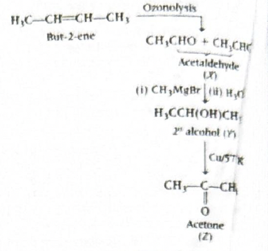
-
Concept used / theory behind it:
- Statement I: Acetone is a methyl ketone, so it gives positive iodoform test with \( \mathrm{I_2/NaOH} \), forming yellow precipitate of iodoform.
- Statement II: Disproportionation with concentrated \( \mathrm{NaOH} \) is Cannizzaro reaction, shown by aldehydes without \(\alpha\)-hydrogen. Acetone is a ketone, so it does not undergo this reaction.
- Statement III: Ketones undergo Wolff-Kishner reduction and are converted into alkanes under \( \mathrm{NH_2NH_2/KOH/\Delta} \).
- Statement IV: Fehling’s reagent is reduced mainly by aliphatic aldehydes, not by ordinary ketones like acetone.
-
Why the correct option is right:
- For acetone, statements I and III are true, while II and IV are false.
- Hence option (d) is the correct choice.
-
Why other options are wrong or less suitable:
- Any option containing II is wrong because acetone does not undergo Cannizzaro reaction.
- Any option containing IV is wrong because acetone does not reduce Fehling’s reagent.
-
Exam tip / shortcut / elimination clue:
-
Whenever you see:
- Grignard reagent + aldehyde \(\rightarrow\) alcohol
- \( \mathrm{Cu/573\ K} \) on alcohol \(\rightarrow\) oxidation/dehydrogenation product
- track the functional group carefully.
- Also remember: methyl ketone \(\rightarrow\) positive iodoform test.
-
Whenever you see:
- Final result: \(Z\) is acetone, and the correct statements are I and III only. Therefore, the answer is (d).
- Chapter / topic / subtopic: Hydrocarbons \(\rightarrow\) Ozonolysis; Aldehydes, Ketones and Carboxylic Acids \(\rightarrow\) Grignard reaction, iodoform test, Wolff-Kishner reduction
-
Correct answer: (c)
Organic Compounds Containing Nitrogen TTR - Explanation: \(p\)-Methyl benzamide first undergoes Hofmann bromamide degradation with \( \mathrm{Br_2/NaOH} \) to give \(p\)-methylaniline \((X)\). This amine then reacts with benzoyl chloride \( \mathrm{C_6H_5COCl} \) to form the corresponding benzoyl derivative, that is, \( \mathrm{p\text{-}CH_3C_6H_4NHCOC_6H_5} \).
-
Step-by-step explanation:
- The starting compound is \(p\)-methyl benzamide \((p\)-toluamide).
- On treatment with \( \mathrm{Br_2/NaOH} \), an amide undergoes Hofmann bromamide degradation.
- In this reaction, the carbonyl carbon is lost, and the amide is converted into a primary amine having one carbon fewer in the functional side chain.
- Thus \(p\)-methyl benzamide gives \(p\)-methylaniline: \( \mathrm{X = p\text{-}CH_3C_6H_4NH_2} \)
- Now this primary aromatic amine reacts with benzoyl chloride.
- This is a benzoylation reaction of amines, often discussed under Schotten-Baumann type acylation.
- The product is: \( \mathrm{p\text{-}CH_3C_6H_4NHCOC_6H_5} \)
- This corresponds to option (c).
-
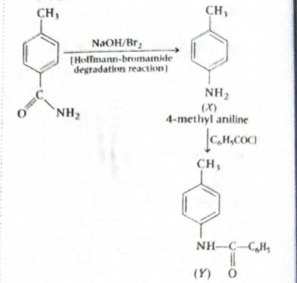
-
Concept used / theory behind it:
- Hofmann bromamide degradation converts \( \mathrm{RCONH_2 \rightarrow RNH_2} \)
- The amine formed contains one carbon less than the amide.
- Benzoyl chloride reacts readily with primary amines to form amides.
- This benzoylation is often used as a test or derivatization method for amines.
-
Why the correct option is right:
-
Only option (c) shows the correct sequence:
- \(p\)-methyl benzamide \(\rightarrow p\)-methylaniline
- \(p\)-methylaniline \(\rightarrow\) benzoyl amide derivative
-
Only option (c) shows the correct sequence:
-
Why other options are wrong or less suitable:
- (a) is wrong because benzoylation occurs on the amine formed after Hofmann degradation, not as a carbamate structure.
- (b) is wrong because anhydride is not formed here.
- (d) is wrong because the acyl group introduced is benzoyl \( \mathrm{C_6H_5CO{-}} \), not \(p\)-methylbenzoyl.
-
Exam tip / shortcut / elimination clue:
- When you see \( \mathrm{Br_2/NaOH} \) on a primary amide, immediately think: \( \mathrm{amide \rightarrow amine} \) with one carbon less.
- When you then see an acid chloride like \( \mathrm{C_6H_5COCl} \), think acylation of the amine.
- Final result: \(Y = \mathrm{p\text{-}CH_3C_6H_4NHCOC_6H_5}\), so the answer is (c).
- Chapter / topic / subtopic: Amines \(\rightarrow\) Hofmann bromamide degradation and benzoylation \(\rightarrow\) Reaction sequence analysis
-
Correct answer: (b) Carbylamine reaction
Organic Compounds Containing Nitrogen TTR - Explanation: Propanenitrile is reduced by \( \mathrm{LiAlH_4} \) to propan-1-amine \((A)\). A primary amine on treatment with \( \mathrm{CHCl_3} \) and alcoholic \( \mathrm{KOH} \) gives an isocyanide \((B)\). This conversion is called the carbylamine reaction.
-
Step-by-step explanation:
- Propanenitrile is: \( \mathrm{CH_3CH_2CN} \)
- On reduction with \( \mathrm{LiAlH_4} \), a nitrile is converted into a primary amine: \( \mathrm{CH_3CH_2CN \xrightarrow{LiAlH_4} CH_3CH_2CH_2NH_2} \)
- So, \( \mathrm{A = CH_3CH_2CH_2NH_2} \) (propan-1-amine)
- Now a primary amine reacts with chloroform and alcoholic \( \mathrm{KOH} \) on heating to form an isocyanide: \( \mathrm{RNH_2 + CHCl_3 + 3KOH \rightarrow RNC + 3KCl + 3H_2O} \)
- Hence, \( \mathrm{B = CH_3CH_2CH_2NC} \)
- This named reaction is the carbylamine reaction.
-
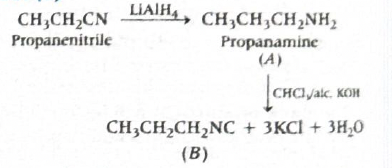
-
Concept used / theory behind it:
- \( \mathrm{LiAlH_4} \) is a strong reducing agent that converts nitriles into primary amines.
- Carbylamine reaction is shown only by primary amines, both aliphatic and aromatic.
- The product formed is an isocyanide or carbylamine, which has the functional group \( \mathrm{-NC} \).
- This reaction is used as a test for primary amines because of the foul smell of isocyanides.
-
Why the correct option is right:
- The reagents \( \mathrm{CHCl_3/alc.\ KOH} \) acting on a primary amine are the exact conditions for carbylamine reaction.
-
Why other options are wrong or less suitable:
- Reimer-Tiemann reaction involves phenol with \( \mathrm{CHCl_3/NaOH} \) to form salicylaldehyde-type products.
- Stephen reaction converts nitriles to aldehydes under different reducing conditions.
- Sandmeyer reaction involves diazonium salts, not primary amines with chloroform.
-
Exam tip / shortcut / elimination clue:
-
Whenever you see:
- primary amine
- \( \mathrm{CHCl_3} \)
- alcoholic \( \mathrm{KOH} \)
- the answer is almost certainly carbylamine reaction.
-
Whenever you see:
- Final result: Conversion of \(A\) to \(B\) is carbylamine reaction, so the answer is (b).
- Chapter / topic / subtopic: Amines \(\rightarrow\) Chemical reactions of amines \(\rightarrow\) Carbylamine reaction